본 프로젝트는 미국 C2C 중고거래 플랫폼 Mercari의 상품
정보(상품명·카테고리·브랜드·상태·배송비 부담·설명 텍스트)로부터 적정
판매가(price)를 예측하는 회귀 문제를 다룬다. 데이터는
mercari_train.tsv 1,482,535건·8개 컬럼으로, 정형·비정형
정보가 혼재되어 있으며 평가지표는 RMSLE(Root Mean Squared Logarithmic
Error)이다. 혜현·진희·용우·유경·소현 5명이 동일한 원본 데이터로부터 각자
독립적으로 EDA→전처리→Feature Engineering→모델링→하이퍼파라미터 튜닝
전체 파이프라인을 설계·수행한 뒤 결과를 통합했다. Ridge가 5명 모두에게서
견고한 베이스라인(RMSLE 0.43~0.47)으로 확인되었고, 충분히 튜닝된
LightGBM은 이를 상회했다(소현 0.42388, 혜현 0.4291). 최고 성능은 소현이
Ridge·LightGBM·FM_FTRL(직접 구현) 3개 모델을 leakage-free 2단계 검증
구조 위에서 가중 블렌딩해 얻은 RMSLE 0.41778이다. 이는
최초 LightGBM baseline(0.49220) 대비 약 15.1% 개선된 수치다. 핵심 결론은
고차원 희소 텍스트 피처를 다루는 이 문제에서 알고리즘 선택 자체보다
데이터 구조에 맞는 피처 표현 설계와 leakage 없는 검증
절차가 성능에 더 크게 기여했다는 것이다.
5명의 최종 RMSLE는 0.41778(소현)~0.4560(유경) 구간에 분포했으며(8장), 순위와 무관하게 여러 팀원의 노트북에서 독립적으로 반복 확인된 공통 패턴이 있다: 가격 신호가 소수의 강한 피처가 아니라 수만 개의 희소 피처(단어·브랜드·카테고리)에 얇게 분산되어 있어 L2 정규화(Ridge)가 L1(Lasso)보다 구조적으로 유리했고, 텍스트 정제 시 숫자를 보존하는 편이 근소하게 유리했으며(용우·유경 교차검증), TF-IDF 어휘 크기를 키울수록 개선 폭이 점차 줄어드는 수확체감 패턴이 나타났다(진희·소현 교차검증). LightGBM은 충분한 학습 라운드와 정규화가 뒷받침될 때만 Ridge를 앞질렀고, 서로 다른 표현을 가진 모델을 블렌딩하는 것이 단일 모델의 한계를 넘는 가장 확실한 방법이었다(8.5절에서 7가지 공통 인사이트로 종합했다).
중고거래 플랫폼에서 판매자가 상품을 등록할 때 가장 막막해하는 지점은 “이 물건을 얼마에 올려야 하는가”이다. 같은 카테고리, 같은 브랜드라도 상태·설명 문구·배송비 부담 주체에 따라 적정가는 크게 달라지고, 이를 판매자 개인의 감에만 맡기면 지나치게 낮은 가격에 손해를 보거나 지나치게 높은 가격에 거래가 성사되지 않는 문제가 반복된다. 본 프로젝트는 미국의 C2C 중고거래 플랫폼 Mercari가 실제로 겪었던 이 문제, 즉 상품 정보만으로 적정 판매 가격을 자동 제안하는 문제(Mercari Price Suggestion Challenge)를 다룬다. 상품명, 카테고리, 브랜드, 상품 상태, 배송비 부담 주체, 상품 설명 등 정형·비정형 정보가 뒤섞인 데이터로부터 가격이라는 연속형 목표 변수를 예측하는 회귀 문제이며, 텍스트·범주형·수치형 피처를 함께 다뤄야 한다는 점에서 실무적인 난이도를 갖는다.
본 프로젝트의 목적은 상품 메타데이터와 설명 텍스트만으로 판매 가격을
예측하는 회귀 모델을 설계·비교하는 것이다. 평가지표로는 RMSLE(Root Mean
Squared Logarithmic Error)를 사용한다. RMSLE는 예측값과 실제값에 각각
로그를 취한 뒤 오차를 측정하므로, 5달러짜리 상품에서 2달러 차이가 나는
것과 200달러짜리 상품에서 2달러 차이가 나는 것을 서로 다른 무게로
평가한다. 즉 절대적인 오차 금액보다 상대적인 오차 비율에 민감한
지표이며, 이 지표의 특성은 이후 데이터 소개와 전처리 단계에서 타깃 변수
price에 log1p 변환을 적용하는 근거와 직접
맞닿아 있다.
본 프로젝트는 유경, 소현, 혜현, 용우, 진희 5명으로 구성된 팀이 진행했다. 팀원 각자가 동일한 원본 데이터로부터 데이터 탐색(EDA), 전처리, 모델링, 하이퍼파라미터 튜닝까지의 전체 파이프라인을 독립적으로 설계·수행한 뒤, 서로의 접근 방식과 결과를 비교하고 하나의 보고서로 통합하는 방식을 택했다. 이는 하나의 정답 파이프라인을 정해두고 분업하는 대신, 결측치 처리·이상치 기준·피처 구성·모델 선택 등 각 단계에서 서로 다른 판단이 최종 성능에 어떤 영향을 미치는지를 팀 차원에서 비교·검증하기 위함이다.
사용한 데이터는 mercari_train.tsv로, 총 1,482,535건의
상품 등록 기록과 8개 컬럼(train_id, name,
item_condition_id, category_name,
brand_name, price, shipping,
item_description)으로 구성되어 있다.
train_id는 단순 일련번호이므로 실질적인 예측 피처는 상품명,
상품 상태, 3단계 카테고리, 브랜드, 배송비 부담 주체, 상품 설명 텍스트의
6가지이며, 목표 변수는 price이다(상세 통계는 2장 참고).
이 보고서의 흐름은 다음과 같다. 먼저 데이터의 구조와 통계적 특성을 파악하고(2장), 탐색적 분석으로 결측·계층·상관 구조를 확인해 전처리 방향의 근거를 마련한다(3장). 이어서 결측치·이상치·텍스트 정제 등 전처리를 적용하고(4장), 팀원별 피처 표현(벡터화·인코딩·파생 피처) 설계를 비교한다(5장). 이 피처 위에서 Ridge·LightGBM·Lasso·FM_FTRL 등 서로 다른 계열의 모델을 학습·해석하고(6장), 하이퍼파라미터를 최적화한다(7장). 이어서 팀 전체 성능을 종합 비교하고 모델 계열·최적화 효과·공통 인사이트를 분석한 뒤(8장), 팀원별 실험 과정을 상세히 서술하고(9장), 팀 공통 결론과 개인 회고로 마무리한다(10장). 각 장은 팀원 5명의 개별 노트북에서 공통으로 확인된 내용은 한 번만 종합하고, 팀원마다 서로 다르게 접근하거나 고유하게 발견한 지점은 누가 어떤 관점을 더했는지 밝히며 서술한다.
mercari_train.tsv는 tab으로 구분된 텍스트 파일이며,
pandas.read_csv(sep='\t')로 불러오면 (1,482,535, 8) 크기의
데이터프레임이 된다. 148만 행이라는 규모 자체가 이후 파이프라인 설계에
직접적인 제약을 가한다 — 전체 데이터에 한 번이라도 밀집(dense) 행렬
연산을 걸면 메모리가 감당되지 않으므로, 5장에서 다루는 희소 행렬(sparse
matrix) 기반 벡터화·인코딩과 4장의
gc.collect()/tocsr() 압축 같은 메모리 관리
기법이 선택이 아니라 필수가 된다. 8개 컬럼은 성격이 뚜렷이 갈린다 —
train_id는 학습에 쓰이지 않는 순수 식별자이고,
price는 예측 대상인 목표 변수이며, 나머지
6개(name, item_condition_id,
category_name, brand_name,
shipping, item_description)만이 실제 입력
피처다. 이 6개는 다시 성격별로 셋으로 나뉜다 —
item_condition_id/shipping처럼 이미 정제된
소수 범주의 수치형(그대로 사용 가능),
category_name/brand_name처럼 문자열이지만
유한한 집합으로 취급 가능한 범주형(인코딩 필요),
name/item_description처럼 판매자가 자유롭게
작성한 비정형 텍스트(벡터화 필요)다. 예측 시점(새 상품이 등록되는
순간)을 기준으로 보면 이 6개 모두 판매자가 상품을 올릴 때 함께 입력하는
정보이므로 실사용 조건에서도 그대로 얻을 수 있는 피처들이며, 이 문제가
“등록 즉시 적정가를 추천”하는 실제 서비스 시나리오에 바로 대응된다는
것을 보여준다. 각 컬럼의 자료형과 결측치 현황은 다음과 같다.
| 컬럼 | 자료형 | 설명 | 결측 건수 | 결측 비율 |
|---|---|---|---|---|
train_id |
int64 | 상품 등록 일련번호(식별자, 학습에는 미사용) | 0 | 0% |
name |
object | 상품명(자유 텍스트, 벡터화 대상) | 0 | 0% |
item_condition_id |
int64 | 상품 상태 등급(1=새것 ~ 5=낡음, 정제된 수치형) | 0 | 0% |
category_name |
object | 카테고리(대/중/소분류, /로 구분, 인코딩 대상) |
6,327 | 0.43% |
brand_name |
object | 브랜드명(고카디널리티 범주형, 인코딩 대상) | 632,682 | 42.68% |
price |
float64 | 판매 가격(달러, 목표 변수) | 0 | 0% |
shipping |
int64 | 배송비 부담 주체(0=구매자, 1=판매자, 정제된 수치형) | 0 | 0% |
item_description |
object | 상품 설명(자유 텍스트, 벡터화 대상) | 6 | 0.0004% |
결측치 분포를 보면 category_name(0.43%)과
item_description(사실상 0%)은 무시할 만한 수준이지만,
brand_name은 전체의 42.68%가 결측이다. 절반에 가까운 상품이
브랜드 정보 없이 등록된다는 뜻이며, 이 결측 자체를 어떻게
다루느냐(3.2절의 null_penalty 분석, 4장의
'Other_Null' 대체, 5.2절 용우의 description
역매칭 기반 복원)가 이후 전처리 설계 전반에서 반복적으로 등장하는 핵심
주제가 된다.
수치형 컬럼(item_condition_id, price,
shipping)의 기술 통계는 describe() 결과
기준으로 다음과 같다.
| 통계량 | item_condition_id | price ($) | shipping |
|---|---|---|---|
| count | 1,482,535 | 1,482,535 | 1,482,535 |
| mean | 1.91 | 26.74 | 0.45 |
| std | 0.90 | 38.59 | 0.50 |
| min | 1 | 0.00 | 0 |
| 25% | 1 | 10.00 | 0 |
| 50% | 2 | 17.00 | 0 |
| 75% | 3 | 29.00 | 1 |
| max | 5 | 2,009.00 | 1 |
item_condition_id는 중앙값이 2(양호)로 새것보다는
사용감이 있는 상품이 다소 많고, shipping은 구매자 부담(0)이
절반을 약간 웃돈다. 5명 모두 원본 데이터를 불러온 직후 이 세 통계표를
동일하게 확인했으며, 그 결과 역시 서로 완전히 일치한다.
텍스트·범주형 변수의 고차원성이 만드는 모델링 난점.
원본 컬럼은 8개뿐이지만, 벡터화·인코딩을 거친 뒤의 실제 피처 차원은 전혀
다른 규모가 된다 — brand_name(결측 제외 4,808종)과
category_name(대분류 11·중분류 114·소분류 861~871종)은
원-핫 인코딩만으로도 수천 차원이 되고,
name·item_description은 벡터화 방식에 따라
팀원마다 20,000~200,000차원까지 늘어난다(5.1절). 그 결과 최종 학습
행렬은 55,807~148,976차원(팀원별 상이, 5.1절)에 달하면서도 대부분의 값이
0인 극단적 희소(sparse) 행렬이 된다 — 유경이 5.3절에서 실측한 것처럼
벡터화된 name/item_description 행렬의 비영
원소 비율은 각각 0.02%/0.05% 수준에 불과하다. 이런 고차원·고희소 구조는
일반적인 회귀 문제와는 다른 두 가지 난점을 만든다. 첫째, 관측치(148만
행) 대비 피처(수만~수십만 차원)가 지나치게 많아 과적합 위험이 커지므로
Ridge 같은 정규화 기반 선형모델이 유효한 이유가 되고(8.3절), 반대로
Lasso처럼 계수를 정확히 0으로 만드는 정규화는 신호가 넓게 퍼진 이 데이터
구조와 맞지 않아 오히려 과소적합을 일으킨다(유경의 5-factor 진단,
8.3절). 둘째, 트리 기반 모델(LightGBM)에게는 원-핫 인코딩이 분기 효율을
떨어뜨릴 수 있어, 정수 라벨을 네이티브 카테고리로 직접 전달하는 대안이
의미를 갖는다(소현의 v1→v2 전환, 5.6절). 즉 2장에서 확인한 “원본 컬럼은
단순하지만 결측·카디널리티가 큰 비정형 데이터”라는 특징이, 5~8장에서
다루는 피처 표현·모델 선택 전략 대부분의 출발점이 된다.
price의 분포를 그대로 살펴보면 대부분의 상품이
10~30달러대에 몰려 있고, 소수의 고가 상품이 오른쪽으로 긴 꼬리를 만드는
전형적인 우측 왜도(right-skewed) 형태를 보인다. 5명 전원이 독립적으로
같은 결론에 도달했다: 이런 분포를 그대로 회귀 타깃으로 사용하면 고가
상품 소수에 모델이 끌려가기 쉽고, 평가지표인 RMSLE 자체가 로그 스케일
오차를 측정하는 지표이므로 타깃을 np.log1p(price)로 미리
변환해두면 일반적인 회귀모델의 RMSE 최소화가 곧 RMSLE 최소화와
같아진다는 이점이 있다. 로그 변환 후 분포는 좌우 대칭에 가까운 종
모양으로 완화되어, 이후 모든 팀원이 모델 학습 시
log1p(price)를 타깃으로 사용하고 예측 후
expm1로 원 스케일을 복원하는 방식을 공통으로 채택했다.
가격 데이터를 살펴보는 과정에서 함께 발견된 데이터 품질 이슈가 있다.
price == 0인 행이 874건(전체의 0.06%) 존재하는데, 이는
“무료 나눔”에 가까워 가격 예측이라는 문제 정의와 맞지 않는다. 또한
최댓값이 2,009달러로 Mercari의 실제 등록 가격 상한(2,000달러) 정책을
벗어나는 극소수의 이상치도 확인된다. 이 값들을 어떻게 처리했는지는
4장(데이터 전처리)에서 다루며, 여기서는 로그 변환 이전 단계에서 이런
이상치가 분포의 왜도를 한층 더 키우는 요인이라는 점만 짚어둔다.
유경은 여기서 한 걸음 더 나아가, price와
log1p(price) 뿐 아니라 item_condition_id,
shipping, 상품명 글자 수(name length), 상품
설명 글자 수(item_description length)까지 한 화면에 놓고
원시 데이터의 전체 윤곽을 6분할 그래프로 정리했다. 아래 그림은 그
결과로, 가격 분포의 왜도뿐 아니라 상품 상태·배송비 구성비, 텍스트 필드의
길이 분포까지 한눈에 보여준다.
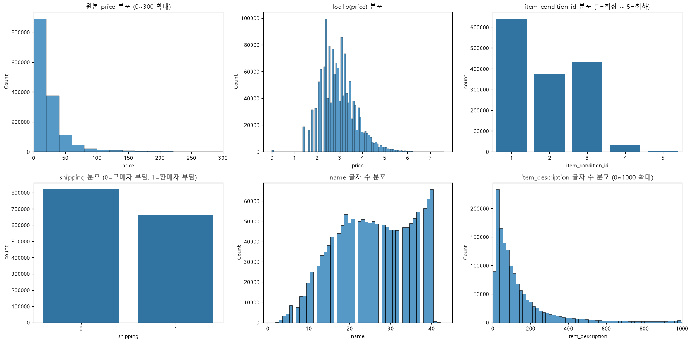
원시 데이터 6개 변수(price, log1p(price), item_condition_id, shipping, name 길이, item_description 길이)의 분포 개관.
세 컬럼(category_name, brand_name,
item_description)에 결측치가 존재하며, 그 비중은 컬럼마다
크게 다르다. item_description과
category_name은 각각 0.0004%, 0.43%로 무시할 수 있는
수준이지만, brand_name은 전체의 42.68%(632,682건)가 비어
있어 절반에 가까운 상품이 브랜드 정보를 갖고 있지 않다. 이는 무시하고
지나칠 수 있는 규모가 아니므로, 어떻게 다루느냐에 따라 모델 성능에
미치는 영향이 크다.
소현은 결측치를 단순히 제거하거나 채우고 끝내는 대신,
“브랜드·카테고리·설명이 동시에 몇 개나 비어 있는가”라는 결측 개수
자체(null_penalty)와 가격 사이의 관계를 살펴보았다. 실제
분포는 다음과 같다.
null_penalty(결측 개수) |
행 수 | 비율 |
|---|---|---|
| 0개(결측 없음) | 846,446 | 57.1% |
| 1개 결측 | 631,706 | 42.6% |
| 2개 결측 | 3,451 | 0.23% |
세
컬럼(brand_name/category_name/item_description)이
동시에 전부 결측인 행은 사실상 없었다 —
category_name(0.43%)과
item_description(0.0004%) 결측 자체가 워낙 드물어, 대부분의
“1개 결측”은 brand_name 단독 결측이고 “2개 결측”은 그 드문
두 컬럼이 겹친 극소수 사례에 가깝다. 그 결과 결측된 정보가 많을수록(즉
상품 등록 정보가 부실할수록) 평균 판매 가격이 낮게 형성되는 경향이
뚜렷하게 나타났다. 이는 결측 여부 자체가 노이즈가 아니라 가격을 설명하는
하나의 신호가 될 수 있음을 보여주는 근거이며, 이후 전처리 단계에서
결측치를 삭제하지 않고 별도 범주로 유지하는 방향의 근거로 이어진다.
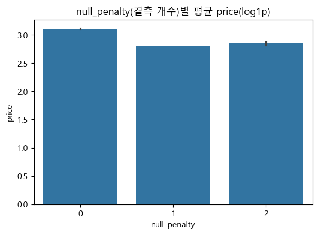
null_penalty(브랜드·카테고리·설명이 결측이었던 개수,
0~2)별 평균 log1p(price). 결측 개수가 많을수록 평균 가격이 낮아지는
경향이 뚜렷하다.
한편 용우와 진희는 서로 다른 각도에서 brand_name의
특이점을 짚었다. 용우는 brand_name이 비어 있더라도
item_description 텍스트 안에 실제 브랜드명이 언급되어 있는
경우가 상당수 있다는 점을 확인했고(이 관찰은 이후 4.2절에서 결측의 84%를
복원하는 실제 전처리로 이어진다), 진희는 실제로 다수의 상품(1,933건,
5.4절)에서 brand_name 값 자체가 "AND"라는
브랜드로 등록되어 있음을 발견했다. AND는 영어의 접속사와
형태가 같아 이후 텍스트 정제 단계에서 불용어(stopword)로 함께 제거될
위험이 있는 값으로, 결측치 못지않게 데이터 특유의 주의가 필요한 지점임을
시사한다. 두 관찰 모두 “결측/텍스트가 뒤섞인 브랜드 정보를 어떻게 정리할
것인가”라는 4장의 전처리 설계로 이어진다.
참고로 price == 0 행 제거 기준(4.1절)도 팀원마다 정확한
건수가 미묘하게 갈렸다 — 소현·용우·유경·진희 4명은 874건을 확인했지만,
혜현은 자신의 노트북에서 826건으로 집계했다. 필터링 시점(중복 제거
전/후)의 차이로 보이며, 최종 채택 방법(price > 0) 자체는
5명 모두 동일했다.
category_name은 "Men/Tops/T-shirts"처럼
/로 구분된 대분류/중분류/소분류 3단계 계층 구조를 갖는다.
5명 모두 이를
cat_dae(대분류)/cat_jung(중분류)/cat_so(소분류)
3개 컬럼으로 분리했으며, 고유값 개수는 대분류 11개, 중분류 114개, 소분류
871개로 전원 동일하게 확인했다. 결측치(category_name이
NaN인 6,327건)는 3단계 모두 별도 범주로 처리해, 계층 분리 이후에도 정보
손실 없이 다룰 수 있도록 했다.
혜현은 대분류(cat_dae)별 거래 건수와 평균 로그 가격을
하나의 이중축 그래프로 겹쳐 그려, 어떤 카테고리가 거래량이 많은지와 어떤
카테고리가 상대적으로 비싼지를 동시에 비교했다. 대분류 사이에 거래
건수와 평균 가격의 순위가 서로 어긋나는 경우가 있어(거래량이 많다고 해서
평균 가격도 높은 것은 아님), 카테고리 피처가 거래량 편향과 가격 편향을
동시에 담고 있음을 확인할 수 있다.
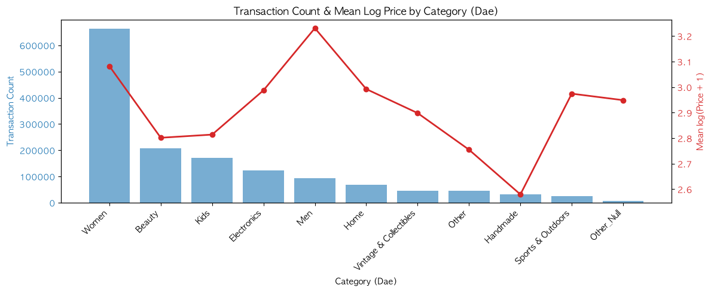
대분류(cat_dae)별 거래 건수(막대)와 평균 log1p(price)(선)를 겹쳐 그린 이중축 그래프.
소현은 이를 보완해 대분류별 로그 가격의 분포 자체(중앙값뿐 아니라 사분위 구간과 산포)를 박스플롯으로 함께 확인했다. 평균만으로는 드러나지 않는, 카테고리 내부의 가격 편차(같은 카테고리 안에서도 저가 상품과 고가 상품이 얼마나 넓게 퍼져 있는지)를 함께 살펴야 이후 카테고리 피처의 중요도를 올바르게 해석할 수 있다는 판단에서다.
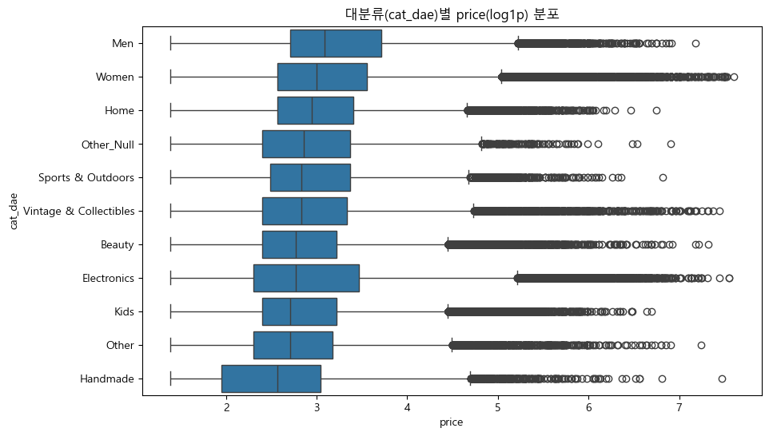
대분류(cat_dae)별 log1p(price) 분포 박스플롯.
유경은 여기서 한 걸음 더 나아가 “거래량 순위”와 “가격 순위”를 나란히 비교했다.
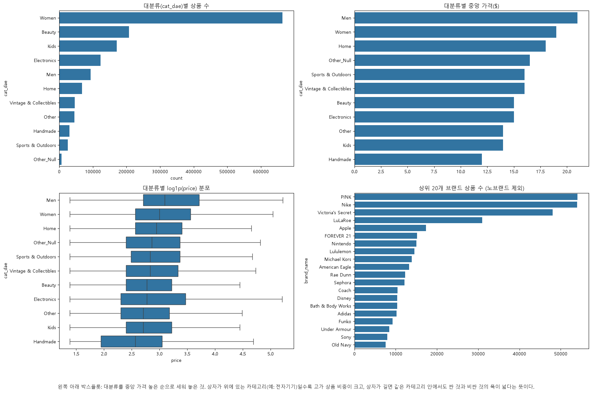
좌상단: 대분류별 상품 수. 우상단: 대분류별 중앙 가격($). 좌하단: 대분류별 log1p(price) 분포(중앙 가격 순 정렬). 우하단: 노브랜드를 제외한 상위 20개 브랜드 상품 수.
두 순위는 실제로 크게 어긋난다. 거래량 1위는 Women(약
66만 건)이지만 중앙 가격 1위는 Men(약 $21)이고,
Women은 중앙 가격 기준으로는 2위(약 $19)에 그친다. 반대로
거래량이 가장 적은 축에 속하는 Sports & Outdoors(약 2만
건)는 중앙 가격이 낮은 편(하위 5위)이라, “거래량이 적으면 희소해서 비쌀
것”이라는 직관과도 어긋난다. 즉 카테고리라는 하나의 피처 안에 “얼마나
자주 거래되는가”와 “얼마에 거래되는가”라는 서로 독립적인 두 축의 정보가
섞여 있다는 것을 혜현의 이중축 그래프에 이어 다시 한번 정량적으로 확인한
셈이다. 우하단 패널의 브랜드 상품 수 순위(PINK·Nike·Victoria’s
Secret·LuLaRoe·Apple 순)도 3.4절에서 다룰 “상위 15개 브랜드 가격
분포”(유경, 가격 기준 순위)와 나란히 놓고 비교할 만하다 — 거래량 상위
브랜드가 반드시 고가 브랜드는 아니라는 점에서, 카테고리와 마찬가지로
브랜드 역시 “얼마나 자주 팔리는가”와 “얼마에 팔리는가”가 분리된
신호다.
브랜드는 결측치를 제외하면 4,808개의 고유 값을 가지며, 상위 브랜드로는 PINK, Nike, Victoria’s Secret 등 의류·패션 브랜드가 큰 비중을 차지한다. 유경은 결측치가 아닌 상위 15개 브랜드를 추려 브랜드별 로그 가격 분포를 박스플롯으로 비교했는데, 브랜드마다 상자의 위치(가격 수준)와 높이(가격 편차)가 뚜렷하게 갈렸다. 즉 상자가 높고 짧은 브랜드는 가격이 대체로 높고 균일하게 형성되는 프리미엄 브랜드에 가깝고, 상자가 길게 퍼진 브랜드는 취급 상품군이 다양해 가격대 자체가 넓게 분산되어 있다. 이는 브랜드명이 카테고리 못지않게 가격을 설명하는 유의미한 피처가 될 수 있음을 뒷받침한다.
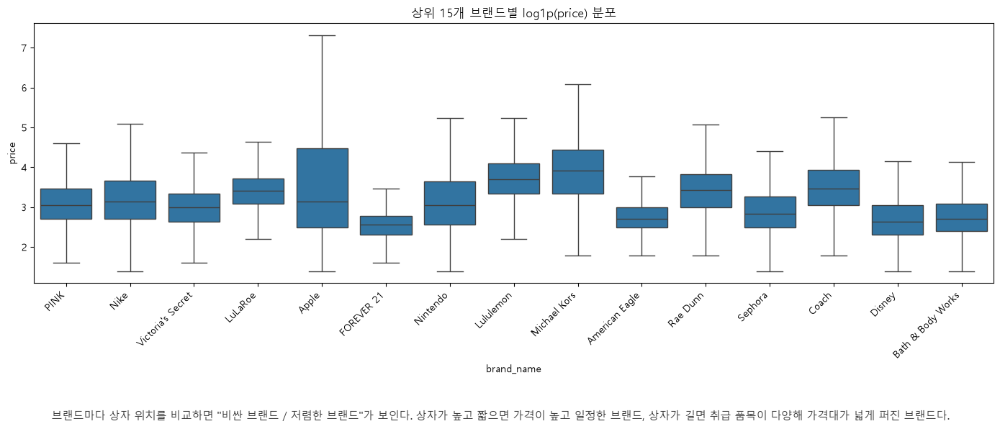
결측치를 제외한 상위 15개 브랜드의 log1p(price) 분포 박스플롯.
유경은 여기에 더해 item_condition_id,
shipping, name/item_description
글자 수, 원본·로그 price를 모두 포함한 수치형 피처 간
상관관계를 히트맵으로 확인했다.
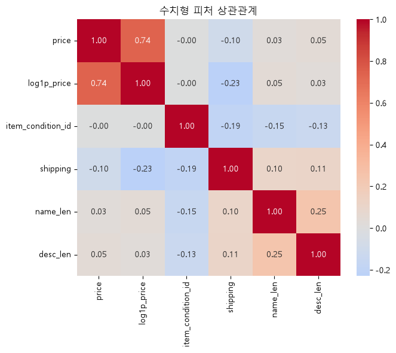
item_condition_id, shipping, 텍스트 길이, price/log1p(price) 간 상관관계 히트맵.
히트맵에서 log1p(price)와의 상관계수만 절댓값 기준으로
추려보면 다음과 같다.
| 변수 | log1p(price)와의 상관계수 |
|---|---|
shipping |
-0.23 |
name_len(상품명 글자 수) |
+0.05 |
desc_len(설명 글자 수) |
+0.03 |
item_condition_id |
-0.00 |
shipping(배송비를 판매자가 부담하는지)이 수치형 피처
중에서는 가장 뚜렷한 상관을 보이는데, 이는 판매자가 배송비를 떠안는
상품일수록 상품 가격 자체를 낮게 책정하는 경향과 부합한다. 반면
item_condition_id(상품 상태 등급)는 상관이 거의 0에 가까워,
상태 등급만으로는 가격을 설명하기 어렵다는 것을 보여준다.
유경은 이 두 피처를 박스플롯으로도 직접 확인했다.
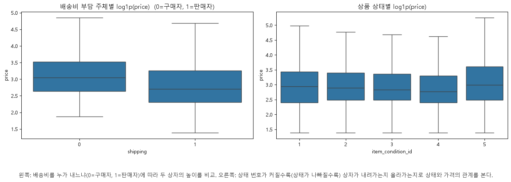
왼쪽: 배송비를 누가 내느냐(0=구매자, 1=판매자)에 따른 두 상자의 높이 비교. 오른쪽: 상태 번호가 커질수록(상태가 나빠질수록) 상자가 내려가는지 올라가는지로 상태와 가격의 관계를 본다.
shipping은 상관계수(-0.23)와 일관되게 중앙값이 뚜렷이
갈린다(구매자 부담 시 log1p(price) 중앙값 약 3.05, 판매자 부담 시 약
2.71). 반면 item_condition_id는 1(새것)에서 4(사용감
있음)까지는 중앙값이 완만히 낮아지다가(2.93→2.88→2.82→2.75) 5(가장
낡음)에서 오히려 다시 높아진다(2.98) — 이 비단조적(non-monotonic)인
패턴이야말로 item_condition_id와 가격의
선형 상관계수가 거의 0으로 나온 이유다. 실제로는 상태가
가격에 영향을 주지만 그 관계가 일직선이 아니라서, 단순 상관계수
하나만으로는 “상태는 가격과 무관하다”고 성급히 결론 내릴 수 없다는 것을
보여주는 사례다.
혜현도 동일한 두 피처를 독립적으로 박스플롯화해 같은 결론에 도달했다.
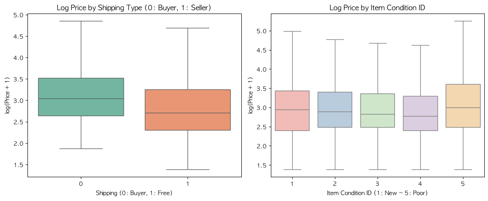
왼쪽: shipping(0=구매자 부담, 1=판매자 무료배송)별 log1p(price)
분포. 오른쪽: item_condition_id(1=새것~5=낡음)별 log1p(price) 분포. 두
그래프 모두 이상치를 제외(showfliers=False)해 상자 간 위치
차이를 더 뚜렷하게 보여준다.
혜현의 그래프에서도 shipping=0(구매자 부담) 쪽 상자가 shipping=1(판매자 무료배송)보다 위에 위치해 유경의 상관계수·중앙값 분석과 정확히 같은 방향을 가리키며, item_condition_id 쪽 상자들도 뚜렷한 단조 증가/감소 없이 뒤섞여 있어 “선형 상관관계로는 포착되지 않는 비단조적 관계”라는 해석을 팀원 두 명이 서로 다른 노트북에서 독립적으로 재현한 셈이다.
상품 상태 등급이나 배송비 부담 여부 같은 개별 수치형 피처와 가격
사이의 선형 상관관계는 이처럼 전반적으로 크지 않았는데, 이는 가격을
결정하는 정보 대부분이 카테고리·브랜드·텍스트 같은 범주형·비정형 피처에
담겨 있고, 수치형 피처는 보조적인 신호에 가깝다는 것을 시사한다. 이
관찰은 이후 5장(Feature Engineering)에서 텍스트·범주형 피처의 벡터화
방식에 공을 들여야 하는 이유와도 맞닿아 있으며, 6.2절에서 확인한
LightGBM 피처 중요도에서도 shipping이 상위권에 오른 것과
일관된다.
원본 데이터는 148만여 건의 대규모 거래 기록이지만, 실질적으로 모델이
활용할 수 있는 정보는 상품 상태·배송비 같은 몇 개의 수치형 피처,
11~871개 수준의 계층적 카테고리, 4,808개에 달하는 브랜드, 그리고 자유
형식의 상품명·설명 텍스트로 요약된다. 가격은 소수 고가 상품이 꼬리를
이루는 우측 왜도 분포이며 log1p 변환이 사실상 모든 팀원의
공통 출발점이었고, brand_name의 높은 결측 비율(42.68%)과
카테고리의 계층 구조는 이후 전처리에서 반드시 다뤄야 할 두 축으로
확인되었다. 이 장에서 확인한 분포·결측·계층 구조상의 특징들은 4장(데이터
전처리)에서 각 팀원이 채택한 결측치 처리, 이상치 제거, 텍스트 정제
방식의 직접적인 근거가 된다.
5명 모두 동일한 원본 데이터(mercari_train.tsv,
1,482,535행 8열)에서 출발했고, 세부 구현은 다르지만 다음 절차는 팀 공통
규칙으로 합의되어 전원 동일하게 적용했다.
price == 0(무료
나눔·오입력으로 판단)과 price ≥ 2000(달러, Mercari 실제
등록 상한 정책 기준) 행을 제거했다. 0원 행은 874건, 2000달러 이상 행은
소수(수~수십 건) 수준이었다. 용우만 price <= 2000으로
경계값 2000을 포함시켰고, 나머지 4명은 price < 2000으로
2000 자체도 제외해 경계 처리에 미세한 차이가 있다.train_id 컬럼 제거 및 중복 행 제거 —
train_id는 단순 일련번호라 가격 예측에 무의미하므로
제거하고, 완전히 동일한 행을 drop_duplicates()로 정리했다.
혜현은 train_id를 제외한 7개 컬럼(가격 포함) 조합 기준으로
중복 49건을 먼저 제거한 뒤 이상치를 필터링하는 순서를 택했고, 나머지는
이상치 제거 → 컬럼 삭제 → 중복 제거 순서를 택했다. 순서 차이에도 최종 행
수는 1,481,60x 대로 5명 모두 거의 일치한다(소현 1,481,603 / 용우
1,481,609 / 유경 1,481,603 / 진희 1,481,603 / 혜현 1,481,603).log1p) — 2.2에서 확인한
price의 우측 왜도와 RMSLE 지표 특성에 따라 전원이
np.log1p(price)를 타깃으로 사용했다. 이후 모델은 log
공간에서 학습하고 필요 시 expm1로 원가격을 복원하는 방식을
공유한다.category_name을
/ 기준으로 대/중/소분류 3개 컬럼으로 나눴다(소현
cat_dae/jung/so, 용우 cat_main/sub/sub2, 유경
cat_dae/jung/so, 혜현 cat_dae/jung/so). 대분류
11종, 중분류 114종, 소분류 861~871종으로 팀원 간 거의 동일하게 집계되어
파싱 로직이 사실상 같음을 서로 확인했다. 진희만 이 단계를 생략하고
category_name을 /를 공백으로 치환한 뒤
상품명·브랜드와 하나의 텍스트로 합쳐 TF-IDF에 직접 흘려보냈다.brand_name(약 63만 건,
전체의 42.7%), category_name(6,327건),
item_description(6건)에 결측이 있었다. 소현·유경·혜현은 세
컬럼 모두 'Other_Null' 문자열로 채워 “정보 없음” 자체를
하나의 범주/토큰으로 남겼다. 용우는 단순 대체 대신
item_description 원문에서 정규식으로 브랜드명을 역매칭해
결측을 실제 브랜드로 복원한 뒤, 그래도 못 채운 값만
'Unknown'으로 통일했다(§4.2 참고). 진희는 별도 대체 없이
텍스트 결합 시 fillna('')만 적용했다.name,
item_description) — 소문자화 → 영문자/숫자/공백 외
문자 제거(정규식) → word_tokenize 토큰화 → 불용어 제거
순으로 처리했다. 이 정제 함수는 팀 공통 템플릿을 공유해 5개 노트북의
구현이 거의 동일하다. 특히 두 가지 규칙이 공통으로 지켜졌다: (a)
no/not/nor/never(용우·유경·진희·혜현은
without까지 5개) 등 부정어는 의미를 뒤집을 수 있어 불용어
목록에서 제외했고, (b) 가격 등 개인정보 마스킹 토큰 [rm]이
정제 후 의미 없는 rm 잔여 토큰으로 남는 문제를 막기 위해
rm을 불용어로 추가했다. 유일한 예외는 소현의 정규식으로,
다른 4명이 [^a-z0-9\s](숫자 보존)을 쓴 것과 달리 소현은
[^a-z\s](숫자까지 제거)를 사용했다 — 이 차이의 실제 영향은
§4.2에서 다룬다.fit하고 test에는 transform만 적용해
정보 누수를 막는 원칙을 5명 모두 지켰다(용우·유경·진희·혜현은 최초 분할
이후 곧바로 이를 적용했고, 소현은 초반 실험 버전에서는 전체 데이터에
벡터라이저를 먼저 fit한 뒤 뒤늦게 train_test_split을
수행했으나, 최종 채택 버전(9장 2-stage 검증)에서는 train/valid/test
3-way 분리 후 fold별로 다시 fit하도록 개선했다).(1) 브랜드 결측치 처리 효과 — 용우. 원본
brand_name은 1,481,609건 중 632,295건(약 42.7%)이
결측이었다. 용우는 train에서 학습한 브랜드 사전으로
item_description 원문을 정규식 역매칭해 결측 중 상당수를
실제 브랜드명으로 복원했고, 그래도 못 찾은 값만
'Unknown'으로 남겼다. 그 결과 “값이 있는” 행 비율이 약
57%(850K)에서 약 84%(124만)로 늘었고, 남은 Unknown은 약
25만 건으로 줄었다.
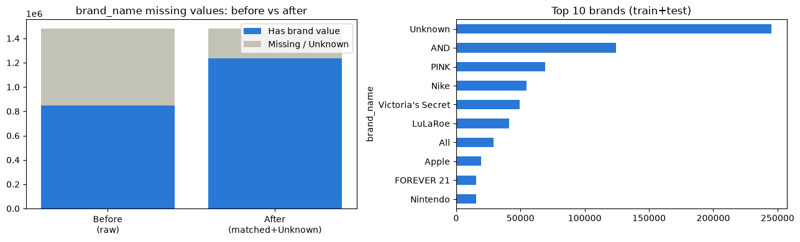
정규식 역매칭 전/후 brand_name 결측 비율 변화.
(2) 텍스트 정제 결과 — 유경·혜현. 정제
파이프라인(소문자화·특수문자 제거·불용어 제거)을 거친 뒤
name/item_description에서 실제로 가장 많이
등장한 토큰을 확인하면, new, size,
no description yet, brand new,
used, free 등 상품 상태·거래 조건을 나타내는
단어가 상위에 오른다. 특히 no description yet,
description yet 같은 구는 원래 결측/기본 문구였던
item_description이 정제 후에도 하나의 고빈도 신호로 남아
있음을 보여주며, 이는 §4.1에서 부정어(no)를 불용어에서
제외한 설계가 실제로 의미를 보존했음을 뒷받침한다.
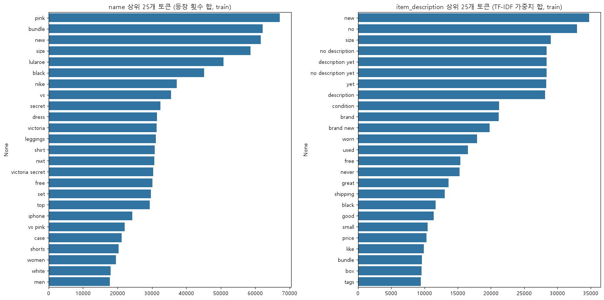
정제 후 name/item_description 상위 빈도 토큰(유경).
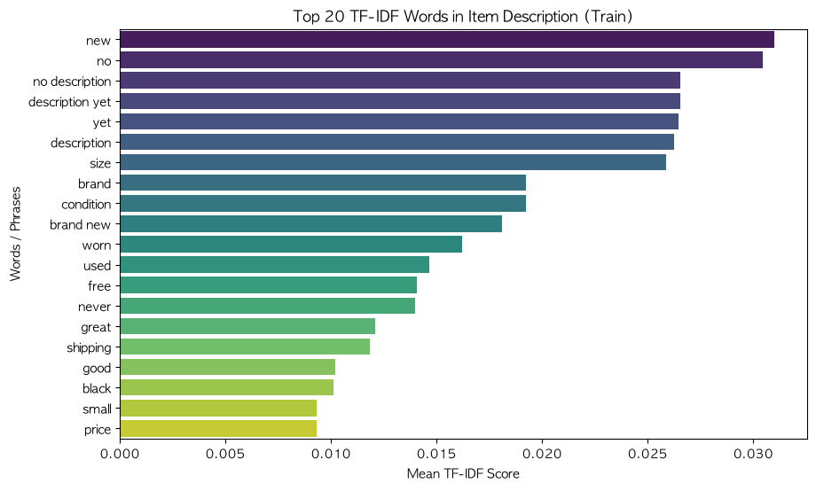
item_description TF-IDF 상위 20개 단어(혜현).
(3) 정규식(숫자 보존 여부) 선택의 모델 성능 영향 — 유경·용우
교차 검증. §4.1에서 언급한 대로 소현만 숫자를 제거하는
정규식([^a-z\s])을 썼고 나머지 4명은 숫자를
보존했다([^a-z0-9\s]). 유경과 용우는 이 선택이 실제 성능에
미치는 영향을 각자 독립적으로 Ridge A/B 테스트로 정량 검증했다.
| 검증자 | 조건 | Ridge RMSLE | 비고 |
|---|---|---|---|
| 유경(17만 표본) | 숫자 보존 [^a-z0-9\s] |
0.48463 | 어휘 5,550개 보존 |
| 유경(17만 표본) | 숫자 제거 [^a-z\s] |
0.48787 | 사이즈·용량 등 5,550개 토큰 소실/뭉개짐 |
| 용우(전체 데이터) | 숫자 보존 | 0.45597 | |
| 용우(전체 데이터) | 숫자 제거 | 0.45892 |
두 사람 모두 독립적으로 “숫자 보존이 근소하게(RMSLE 기준 0.3~0.7%) 더 유리하다”는 동일한 결론에 도달했다. 이는 “4gb”, “32gb”, “사이즈 1X/3X”처럼 숫자가 실제로 가격에 영향을 주는 정보를 담고 있다는 가설을 뒷받침하는 근거이며, 소현의 노트북만 이 검증 이전의 규칙(숫자 제거)을 그대로 쓰고 있어 팀 내에서 유일하게 다른 선택으로 남아 있다.
(4) 카테고리 파싱 방식 비교 — 유경.
category_name은 일부 값에서 소분류 자체에 /가
포함돼 4~5조각으로 쪼개진다(예:
Electronics/Computers & Tablets/iPad/Tablet/eBook Readers).
유경은 split('/')(앞 3조각만 사용)과
split('/', maxsplit=2)(뒷부분까지 소분류에 보존)를
비교했고, 두 방식의 결과가 달라지는 행은 4,385건으로 전체 1,481,612행의
0.30%에 불과했다. 손실되는 하위 카테고리 간 평균 가격 차이도 표준편차
대비 미미해(예: eBook Readers $75.8 vs eBook Access $69.7), 최종적으로
더 단순한 split('/')를 채택했다.
5개 노트북의 전처리 접근은 크게 두 유형으로 나뉜다. 하나는 하나의 전처리 파이프라인을 처음부터 확정해두고 이후 모든 모델에 동일하게 재사용하는 고정 적용형이고, 다른 하나는 이상치 기준·피처 구성·텍스트 정제 규칙 등 여러 대안을 직접 비교한 뒤 최종안을 선택하는 시도·비교형이다. 용우·진희·혜현이 전자, 소현·유경이 후자에 가깝다.
고정 적용형. 용우는 이상치 제거 → 카테고리 3분할 →
description 역매칭 기반 브랜드 결측 복원 → 숫자 보존 텍스트 정제 →
TF-IDF(ngram 1-2)/원-핫 인코딩까지 이어지는 파이프라인 하나를 구성한 뒤,
이를 pickle로 저장해 Ridge와 LightGBM 두 모델에 동일하게
적용했다(5.2절). 사전에 A/B로 검증한 것은 텍스트 정제 규칙(숫자 보존
여부, 4.2절)뿐이었고, 이 결정이 확정된 뒤로는 파이프라인 자체를 바꾸지
않았다. 진희는
name·brand_name·category_name을
하나의 product_text로 결합하는 방식을 처음부터 채택하고, 그
위에서 TF-IDF의 max_features(100k→150k→200k)와
min_df 같은 벡터화 파라미터만 조정했다(5.4절). 카테고리를
별도로 분할하거나 브랜드 결측을 따로 복원하는 대안은 시도하지 않고,
“텍스트 통합”이라는 하나의 설계를 고정한 채 그 위에서 Ridge alpha와
벡터화 파라미터를 반복적으로 튜닝하는 방식을 택했다. 혜현은 이상치 제거
→ 카테고리 3분할 → Other_Null 결측 대체 → 숫자 보존 텍스트
정제 → CountVectorizer/TfidfVectorizer+LabelBinarizer 인코딩까지 하나의
파이프라인을 확정한 뒤, 이 동일한 피처 위에서 Ridge(설명글 포함/제외
비교), LightGBM(3차에 걸친 정밀 재튜닝), 앙상블까지 모든 실험을
재사용했다(5.5절·7.2절). 전처리 자체를 여러 번 바꾸는 대신, 고정된 피처
위에서 모델과 하이퍼파라미터 쪽 실험에 집중한 경우다.
시도·비교형. 소현은 hstack 구성 방식 자체를 여러
버전으로 만들어 비교했다 — 원-핫+유니그램 조합과 LabelEncoder+LGBM
네이티브 categorical+n-gram 조합을 직접 비교해 RMSLE 0.49220→0.47363의
차이를 확인했고(8.4절), 여기에 길이 피처·타깃 인코딩 같은 신규 피처를
추가한 세 번째 조합까지 순차적으로 시도한 뒤 최종안을 채택했다. Ridge
alpha도 11개 값을 그리드로 탐색해(7.1절), 전처리·피처
구성·하이퍼파라미터 세 축 모두에서 여러 안을 비교하는 방식을 취했다.
유경도 두 갈래를 직접 비교했다 — category_name 파싱
방식(split() vs split(maxsplit=2))을 비교해
영향이 미미함(0.30%)을 확인하고 더 단순한 방식을 선택했고(4.2절), 텍스트
정제 시 숫자 보존 여부도 A/B로 비교(0.48463 vs 0.48787)해 숫자 보존 쪽을
채택했다. 두 실험 모두 “더 나은 대안이 있는지 직접 검증한 뒤 선택”하는
방식이라는 점에서 소현과 같은 유형으로 분류했다.
다만 용우·혜현도 텍스트 정제 규칙(숫자 보존 여부)이나 피처 포함 여부(설명글 포함/제외)를 실험하긴 했다. 이는 “하나의 최종 파이프라인을 정하기 위한 사전 검증”의 성격이 강해 이후 전체 파이프라인 자체는 고정해 재사용했다는 점에서, 소현·유경처럼 여러 전처리 기법을 순차적으로 실험·비교하는 유형과는 구분했다.
시도·비교형 사례 — 유경의 category_name 파싱
방식 비교. “시도·비교형”이 실제로 어떤 모습인지 유경의 노트북
주석을 그대로 옮기면 다음과 같다. category_name은 보통
"대분류/중분류/소분류" 3단계지만, 일부 소분류 이름 자체에
/가 들어있어 4~5조각으로 쪼개지는 경우가 있다(예:
"Electronics/Computers & Tablets/iPad/Tablet/eBook Readers").
# [시도했지만 채택하지 않은 방법] category_name.split('/', 2)로 소분류 뒷부분까지 보존
#
# split('/', 2) (maxsplit=2)를 쓰면 소분류가 이렇게 남는다:
# cat_so = "iPad/Tablet/eBook Readers"
# 반면 그냥 split('/') + zip(*...) (기존 코드)는 앞 3조각만 취하므로:
# cat_so = "iPad" 만 남고 뒷부분("Tablet/eBook Readers")은 사라진다
# (zip은 가장 짧은 3조각에 길이를 맞추고 4~5번째 조각을 잘라내기 때문)
def split_cat(category_name):
try:
return category_name.split('/') # 기존 방식: 앞 3조각만 사용
except:
return ['Other_Null', 'Other_Null', 'Other_Null']실제 데이터로 두 방식의 차이를 직접 검증한 결과는 다음과 같다(주석 원문 기준):
Other_Null(카테고리 결측) 다음으로 흔한 케이스지만
그마저도 6,314건(0.43%) 수준eBook Readers 평균 $75.8 vs eBook Access 평균
$69.7 — 차이 $6이지만 가격 표준편차가 ~$100 규모라 통계적으로 미미)name/item_description 텍스트 처리 단계에서
"kindle", "case" 같은 단어가 어차피 텍스트
피처로 이미 들어가 있어, 카테고리에서 일부가 손실되어도 다른 경로로 일부
보완됨split('/')을 그대로
사용이 사례는 “여러 방법을 시도·비교”한다는 것이 실제로는 어떤 작업인지 잘 보여준다 — 대안을 코드로 직접 구현해보고, 그 대안이 실제로 바꾸는 행의 수·비율·가격 영향을 전부 정량적으로 측정한 뒤에야 “차이가 미미하니 기존 방식을 유지한다”는 결론에 도달했다. 이는 4.2절(4)에서 이미 요약한 결과(0.30%)의 실제 판단 근거이기도 하다.
대비되는 사례 — 소현의 hstack 네이티브 categorical 비교(실험
후 실제로 채택한 경우). 유경의 사례가 “실험했지만 기각한”
경우라면, 소현의 hstack 구성 비교는 “실험해서 실제로 채택까지 이어진”
경우다. 소현은 범주형
컬럼(brand_name/cat_dae/cat_jung/cat_so)을
원-핫 인코딩 대신 정수 라벨로 바꿔 LightGBM의
categorical_feature 파라미터로 직접 넘기는 대안을
시도했다.
# 범주형 컬럼: OneHotEncoder 대신 LabelEncoder로 정수 라벨화
# -> LGBM categorical_feature로 넘겨 원-핫(4,808+11+114+871=5,804차원) 대신
# 컬럼 4개로 표현
from sklearn.preprocessing import LabelEncoder
cat_label_encoders = {}
cat_label_df = pd.DataFrame(index=mercari_df.index)
for col in CAT_COLS:
le = LabelEncoder()
cat_label_df[col] = le.fit_transform(mercari_df[col])
cat_label_encoders[col] = le
X_cat_label = csr_matrix(cat_label_df.values.astype(float))원-핫 인코딩은 트리 모델 입장에서 “이 브랜드인가 아닌가”를 컬럼 4,808개로 쪼개놓은 것이라, 분기 하나가 데이터 전체의 극히 일부만 가르는 비효율이 생긴다는 것이 이 대안을 시도한 이유였다. 실제로 텍스트도 유니그램 대신 n-gram(1,2)으로 함께 바꾼 결과, LightGBM RMSLE가 0.49220 → 0.47363으로 약 3.8% 개선됐다(8.4절). 유경의 사례와 이 사례를 나란히 보면, “시도·비교형”이라고 해서 항상 새 대안이 채택되는 것도, 항상 기각되는 것도 아니라 실측 결과가 실제로 그 방향을 결정한다는 공통점이 드러난다 — 두 사람 모두 “그럴듯해 보이는” 대안을 직접 구현하고 정량적으로 측정한 뒤에야 유지·교체 여부를 판단했다.
같은 원본 컬럼을 서로 다른 벡터화·인코딩 전략으로 표현했다. 핵심 차이를 정리하면 다음과 같다.
| 항목 | 진희 | 혜현 | 용우 | 소현 | 유경 |
|---|---|---|---|---|---|
name 벡터화 |
— (product_text에 통합) | CountVectorizer(제한 없음 → 93,451차원) | TfidfVectorizer(max 30,000, ngram 1-2) | CountVectorizer(max 20,000) / v2: ngram(1,2) | CountVectorizer(max 30,000, ngram 1-3) |
item_description 벡터화 |
TfidfVectorizer(max 200,000, ngram 1-2, product_text와 별도) | TfidfVectorizer(max 50,000, ngram 1-2) | TfidfVectorizer(max 50,000, ngram 1-2) | TfidfVectorizer(max 30,000, 커스텀 토큰 analyzer) / v2: 유니그램+바이그램 직접 생성 | TfidfVectorizer(max 50,000, ngram 1-3) |
| 카테고리 인코딩 | 미분할, TF-IDF 텍스트에 흡수 | LabelBinarizer(sparse) | OneHotEncoder(핸들unknown=ignore) | OneHotEncoder(핸들unknown=ignore) / v2: LabelEncoder+LGBM native categorical | LabelBinarizer(sparse) |
| 브랜드 결측 처리 | fillna('')로 텍스트 결합 |
'Other_Null' 상수 대체 |
description 정규식 역매칭 후 잔여만 'Unknown' |
'Other_Null' 상수 대체 |
'Other_Null' 상수 대체 |
| 파생(엔지니어링) 피처 | product_text_len/word_count,
description_len/word_count(4개 길이 피처,
StandardScaler) |
없음 | 없음(6개 원본 피처 + 텍스트/카테고리 벡터만 사용) | null_penalty(결측 개수), 이름/설명 길이,
has_brand,
brand_te/cat_so_te(타깃 인코딩, fold 내
계산) |
없음 |
| 수치형 스케일링 | 길이 피처 4개 StandardScaler | 원본 그대로 사용(스케일링 없음) | item_condition_id만 StandardScaler |
신규 피처만 StandardScaler | 원본 그대로 사용(스케일링 없음) |
이처럼 범주형 인코딩은 OneHotEncoder(소현·용우)와
LabelBinarizer(유경·혜현)로 갈렸고, 텍스트는 CountVectorizer와
TfidfVectorizer를 컬럼별로 다르게 조합했다. 대체로
“name(짧은 텍스트)은 등장 빈도가 중요하니 CountVectorizer,
item_description(긴 텍스트)은 문서 길이 편차가 크니
TF-IDF”라는 논리를 공유하지만, 용우·혜현은 name에도
TF-IDF/무제한 CountVectorizer를 적용해 접근이 갈렸다. 진희는 유일하게
name/brand_name/category_name을
하나의 product_text로 병합해 카테고리 인코딩 자체를 생략한
것이 가장 큰 구조적 차이다.
결측 처리·벡터화·인코딩을 모두 마친 뒤 최종 피처 행렬 차원은 팀원마다 크게 갈렸다(용우 85,529차원, 소현 55,807차원, 혜현 148,976차원 등). 공통적으로 텍스트 피처(name+description)가 전체 차원의 90% 이상을 차지해, 이 문제가 소수의 정형 변수보다 비정형 텍스트에서 대부분의 가격 신호를 얻는 구조임을 보여준다.
용우는 name/item_description 벡터화, brand_name/category 원-핫 인코딩
등 모든 전처리 객체를 학습 시점에 train에서만 fit한 뒤,
4.2절에서 다룬 브랜드 사전과 동일한 방식으로 “재사용을 위해 fit된 객체
자체를 보존”하는 전략을 취했다. 최종적으로는 카테고리 3분할 → 브랜드
결측치 채우기(원문 description 매칭) → 텍스트 클렌징 →
인코딩/벡터화/스케일링까지 전체 파이프라인을 하나의 아티팩트로 묶어
저장했는데, 본인이 코드 주석에 남긴 대로 “새 상품 데이터가 들어와도 이
파일 하나만 불러와 preprocess_new_data()에 통과시키면 학습
때와 동일한 형식의 feature가 나온다”는 재현성을 목표로 한 설계다. 이
재사용성 설계는 결국 새 상품 하나를 넣으면 바로 가격을 추천하는
predict_price(raw_df) 엔드투엔드 함수로 이어지는데(9.1절),
팀 안에서 유일하게 “실전 배포”까지 염두에 둔 설계다.
브랜드 결측 복원 시 정규식은 긴 브랜드명이 먼저 매칭되도록
길이 내림차순으로 정렬한 뒤 re.escape와 단어
경계(\b)를 적용한 alternation으로 구성했다(예: “Nike”보다
“Nike Air”가 먼저 매칭 시도되도록) — 짧은 브랜드명이 긴 브랜드명의 부분
문자열로 먼저 걸려 오매칭되는 것을 막기 위함이다. 같은 leakage 방지
원칙(train에서만 known 값 집합 구성)을 브랜드뿐 아니라
cat_main/cat_sub/cat_sub2(카테고리
3단계)에도 동일하게 적용했다.
OneHotEncoder(handle_unknown='ignore')는 학습 때 못 본
카테고리를 0벡터로 처리하는데, 이미 브랜드 결측치 복원 단계에서
restrict_to_known으로 ’Unknown’으로 통일해둔 값 위에 이중
안전장치를 더한 것이라고 명시했다.
텍스트 정제 코드에서는 실제 버그를 하나 발견해 스스로 고친 기록도
남아 있다. 부정어 불용어 예외 목록을 만들 때 원래 코드는
{'no', 'not', 'nor', 'never' 'without'}처럼
never와 without 사이에 콤마가 빠져 있어,
파이썬이 두 문자열을 'neverwithout'이라는 존재하지 않는
단어 하나로 합쳐버리는 문제가 있었다. 코드 주석에 “콤마 추가로
수정”이라고 직접 남기며
{'no', 'not', 'nor', 'never', 'without'}으로 고쳤다 — 결과
수치보다 구현 과정의 QA 사례로 의미가 있다.
해석 단계에서는 hstack 결합 순서(category → 수치형 → shipping → name → description)를 그대로 활용해, Ridge 계수를 6개 컬럼 그룹(brand_name/category/item_condition_id/shipping/name/description)으로 묶어 그룹별 대표 가중치를 확인했다(6.2절 피처 중요도 해석과 연결된다).
유경은 텍스트 정제 각 단계(소문자화, 특수문자 제거, 공백 정리,
토큰화, 불용어 제거)의 필요성을 코드 주석으로 상세히 남겼는데, 숫자를
보존하기로 한 결정은 실제 사례에서 나왔다고 밝혔다 — 초기에 영문자만
남기는 정규식([^a-z\s])을 썼을 때 “The pale pink is a 1X,
and I also have a 3X” 같은 문장에서 사이즈 표기
1X/3X가 모두 의미 없는 x로 뭉개져
구분이 안 되는 문제를 발견했고, 이를 계기로 [^a-z0-9\s]로
바꿔 숫자를 보존했다(이 선택의 실제 성능 효과는 4.2절의 A/B 비교
참고).
벡터화 방식 선택에도 근거를 남겼다 — name은 평균 26자의
짧은 텍스트라 CountVectorizer, item_description은 평균
146자의 긴 텍스트라 TfidfVectorizer를 각각 적용했다(다른 팀원들도 대체로
이 논리를 공유했다, 5.1절 참고). 벡터화 이후에는 상위 빈출 토큰과 함께
“토큰 수 대비 실제 사용 밀도”(희소성)를 직접 측정해, 두 벡터가 실제로
얼마나 성기게 채워지는지 수치로 확인했다 —
name(CountVectorizer) 비영 원소 비율 0.01848%,
item_description(TfidfVectorizer) 비영 원소 비율
0.04885%로, item_description 쪽이 약 2.6배 더 조밀하다. 이는
item_description이 name보다 평균 5배 이상
길어(146자 vs 26자) 문서당 등장 토큰 수 자체가 많기 때문으로 해석했다.
결측 처리·벡터화·인코딩을 모두 마친 뒤 최종 학습/테스트 행렬은 각각
(1,185,282, 85,521), (296,321, 85,521)
차원으로 확정됐다.
범주형 인코딩 세부.
cat_dae/cat_jung/cat_so/brand_name
네 컬럼 각각에 별도의 LabelBinarizer(sparse_output=True)
인스턴스를 만들어 train에만 fit_transform, test에는
transform만 적용했다(코드 주석: “검증 세트 정보 누수
방지”). item_condition_id/shipping은 이미
숫자형이라 인코딩 없이 csr_matrix()로만 변환했다.
lb_cat_dae = LabelBinarizer(sparse_output=True)
X_train_cat_dae = lb_cat_dae.fit_transform(X_train['cat_dae'])
X_test_cat_dae = lb_cat_dae.transform(X_test['cat_dae'])
# lb_cat_jung, lb_cat_so, lb_brand도 동일 패턴으로 반복실행 결과 차원은 cat_dae(1,185,282×11),
cat_jung(×114), cat_so(×861),
brand_name(×4,533)이다. 눈에 띄는 점은
cat_so의 인코딩 차원(861)이 전체 데이터 기준 소분류
종류(871개)보다 10개 적다는 것 — train에는 없고 test에만 존재하는 소분류
10개가 있다는 뜻이며, handle_unknown 처리 없이
LabelBinarizer를 그대로 쓰면 이 값들이 transform 시 전부
0벡터로 처리된다. 결측치는 brand_name을
'Other_Null'로, category_name은
split_cat()의 try/except에서
['Other_Null']×3으로 채웠고,
item_description은 다른 두 컬럼과 다른 상수
'No description yet'으로 채워 결측을 구분했다.
수치형·파생 피처는 없음.
name_len/desc_len 길이 변수를 계산한 코드가
있지만, 이는 3.4절 상관관계 히트맵을 그리기 위한 EDA용 계산일 뿐 실제
모델 입력 피처(hstack 결합 대상)로는 쓰이지 않았다 — 5.1절 표의 “없음”
표기가 정확함을 재확인했다.
메모리 최적화는 제한적.
LabelBinarizer(sparse_output=True)로 인코딩 결과 자체를
희소 행렬로 유지하고 hstack 결과를 tocsr()로 압축하는 것
외에, gc.collect()나 dtype 다운캐스팅 같은 명시적 메모리
관리 코드는 사용하지 않았다.
해석 단계에서는 hstack 순서(수치형 → cat_dae → cat_jung → cat_so →
brand → name → description)를 기준으로 Ridge와 Lasso가 실제로 0이 아닌
값으로 남긴 계수 개수를 비교해, Lasso의 과소적합 원인(8.3절)을 이 순서
정보를 활용해 직접 진단했다. 카테고리 파싱 방식(split() vs
split(maxsplit=2)) 대안 비교는 4.3절에서 이미 상세히
다뤘다.
진희의 피처 엔지니어링은
name/brand_name/category_name을
하나의 product_text로,
name/item_description을 결합한
item_description으로 재구성하는 것에서 출발했다(4.1·5.1절
참고). 실제 구현은 다음과 같다.
def make_product_text(df):
df['product_text'] = (
df['name'].fillna('') + ' ' +
df['brand_name'].fillna('') + ' ' +
df['category_name'].fillna('').str.replace('/', ' ', regex=False)
)
df['product_text'] = (
df['product_text'].apply(preprocess_text).apply(lambda x: ' '.join(x))
)
return dfteamexcelsheet에 본인이 직접 남긴 통합 의도는 세 가지다 — (1)
텍스트에서 반복 등장하는 브랜드·특징 단어로 중요도를 자연스럽게 학습시킬
수 있고, (2) brand_name이 결측이어도 name에
포함된 브랜드 정보로 보완할 수 있으며, (3) product_text
자체가 상품 정보를 압축적으로 담아 설명이 부실한 상품도 다른 텍스트로
보완할 수 있다는 것이다. 다만 이 통합에는 “기존의 명확한 구분(카테고리
등)이 사라진다”, “제목과 설명이 상이하면 오히려 파악이 어려워진다”는
단점도 본인이 직접 명시했다.
이 과정에서 발견한 세부 이슈도 있다. brand_name이
AND인 상품 1,933건이 불용어 and와 동일한
토큰으로 처리되는 문제를 확인하고, 다음 코드로
brand_name에서만 AND를
brand_and로 치환해 불용어 제거를 피했다(name의
and는 “pink and black”처럼 일반 접속사와 구분이 어려워 변환
대상에서 제외했다).
mercari_df['brand_name'] = (
mercari_df['brand_name']
.str.replace(r'\bAND\b', 'brand_and', regex=True)
)alpha=2.0 기준 RMSLE가 0.4343549 → 0.4343427로 미세하게
개선됐다(개선폭은 작지만 방향은 일관됐다). 참고로 같은 “AND 브랜드”
문제를 다른 파이프라인·다른 컬럼 범위에서 다시 집계한 용우의 결과는
규모가 훨씬 컸다 — 용우의 brand_name 최종 분포에서
AND는 Unknown(196,041건) 다음으로 많은
99,396건(2위, PINK의 55,325건보다도 많음)을 차지했다.
진희(product_text 기준 1,933건)와 용우(brand_name 컬럼 자체 기준
99,396건)는 집계 범위가 달라 숫자를 직접 비교할 수는 없지만, 두 사람이
완전히 독립적인 파이프라인에서 같은 문제를 각자 발견했다는 점은 이
이슈가 우연이 아니라는 것을 뒷받침한다.
TF-IDF min_df(희귀 단어 제거 기준) 실험도 진행했다 —
기준값(product_text/item_description 모두
min_df=3)이 0.434032로 가장 좋았고, 두 값을 모두 5로 올리면
0.435096으로 악화됐다. 특히 product_text의
min_df만 5로 올렸을 때(0.435099)가
item_description만 5로 올렸을 때(0.434074)보다 훨씬 크게
나빠져, product_text의 희귀 단어(특정 브랜드·상품명)가
item_description의 희귀 단어보다 가격 예측에 더 중요하다는
것을 확인했다. 길이·단어수 파생 피처는 다음과 같이 4개를 만들어
StandardScaler로 스케일링했다.
mercari_df['product_text_len'] = mercari_df['product_text'].str.len()
mercari_df['product_text_word_count'] = mercari_df['product_text'].str.split().str.len()
mercari_df['description_len'] = mercari_df['item_description'].str.len()
mercari_df['description_word_count'] = mercari_df['item_description'].str.split().str.len()최종 hstack 결합은 product_text TF-IDF(200k) →
item_description TF-IDF(200k) →
수치형(item_condition_id, shipping) → 길이
파생 피처(4개, 스케일링) 순으로 이루어졌다.
텍스트 벡터화의 비대칭 설계. 혜현은
name과 item_description에 서로 다른 벡터화
기법을 의도적으로 차등 적용했다.
cnt_vec = CountVectorizer()
X_name_train = cnt_vec.fit_transform(train_df['name'])
X_name_test = cnt_vec.transform(test_df['name'])
tfidf_descp = TfidfVectorizer(max_features=50000, ngram_range=(1, 2))
X_descp_train = tfidf_descp.fit_transform(train_df['item_description'])
X_descp_test = tfidf_descp.transform(test_df['item_description'])name은 CountVectorizer()를 파라미터 제한
없이 그대로 사용해 사실상 무제한 어휘(93,451차원)를 허용한 반면,
item_description만 max_features=50,000으로
캡을 씌웠다. teamexcelsheet/혜현_excel.pdf의 느낀점란에 이
설계를 “상품명에는 CountVectorizer, 본문 설명글에는
TfidfVectorizer(ngram_range=(1,2))를 데이터 성격에 맞게 차별 적용하여
문맥과 핵심 키워드를 효과적으로 피처화했다”고 직접 밝혀, 짧고 반복이
적은 name은 등장 여부(Count) 자체가 신호이고 긴
item_description은 상대적 중요도(TF-IDF)가 더 유효하다는
논리로 두 벡터화를 구분했음을 확인할 수 있다.
범주형 인코딩과 결측 처리 순서.
LabelBinarizer(sparse_output=True)를
brand_name → item_condition_id → shipping → cat_dae → cat_jung → cat_so
순서로 컬럼마다 별도 인스턴스를 만들어 각각 train
fit_transform/test transform했다. 원-핫 인코딩
결과를 밀집 행렬이 아닌 희소 행렬로 반환해 148만 행 규모의 데이터에서도
메모리를 절약하기 위함이라고 코드 주석에 명시했다. 결측치는
brand_name → category_name → item_description 순으로
fillna(value='Other_Null')을 적용했는데,
category_name은 사실 이 단계 이전(카테고리 3분할용
split_cat()의 try/except)에서 이미
['Other_Null']×3으로 한 번 처리되어 이후 벡터화에도 쓰이지
않으므로, 뒤에서 다시 결측을 채우는 이 줄은 사실상 죽은 코드(dead
code)에 가깝다 — 원본 컬럼을 보존하려는 의도이거나 정리가 누락된 것으로
보인다.
파생 피처는 없음. 노트북 전체를 재확인했으나 길이·단어수·브랜드 존재 여부 같은 파생 피처를 만든 코드는 없다 — 5.1절 표의 “없음” 표기가 정확하다.
피처 결합 단계에서는 “설명글 포함 vs 제외” 두 조합을 비교하기 위해,
train/test 각각에 대해 4개의 결합 희소 행렬(설명글 포함/제외 ×
train/test)을 미리 한 번씩만 hstack(순서: description → name → brand →
item_condition_id → shipping → cat_dae → cat_jung → cat_so)으로
만들어두고 개별 행렬은 즉시 메모리에서
제거(gc.collect())하는 방식을 취했다. hstack의 기본 반환
형식(COO)을 매번 .tocsr()로 압축해 이후 모델 학습에서의
인덱싱 연산도 함께 최적화했다. 이는 Ridge·LightGBM·앙상블이 모델마다
hstack을 반복 호출하지 않고 동일한 결합 행렬을 재사용하도록 해, 대용량
데이터에서 연산과 메모리를 모두 아끼기 위한 설계라고 밝혔다.
텍스트 벡터화와 범주형 인코딩(v1→v2 전환). base
버전은 name에
CountVectorizer(min_df=2, max_features=20000),
item_description에는 이미 토큰 리스트로 정제된 상태를
그대로 받는 analyzer=lambda x: x를 지정한
TfidfVectorizer(min_df=2, max_features=30000)를 적용했다.
범주형(brand_name/cat_dae/cat_jung/cat_so)은
컬럼별 OneHotEncoder(handle_unknown='ignore')를 사용했는데,
LabelBinarizer는 brand_name처럼 고유값이
4,000개 이상인 컬럼에서 체감상 수십 초 이상 걸릴 만큼 느려 제외했고,
미관측 카테고리를 에러 없이 0벡터로 처리하는
handle_unknown='ignore' 옵션 때문에
OneHotEncoder를 선택했다고 명시했다.
이후 실험(아래 “버려진 실험” 참고)이 기대만큼 개선되지 않자, 원-핫 대신 정수 라벨로 바꿔 LightGBM에 네이티브 카테고리로 넘기는 v2로 전환했다.
def ngram_analyzer(tokens, n_range=(1, 2)):
"""이미 토큰화된 리스트에서 n_range 범위의 n-gram을 직접 생성
(analyzer 커스텀이라 ngram_range 파라미터가 적용되지 않아 수동 구현)"""
grams = []
for n in range(n_range[0], n_range[1] + 1):
grams += [' '.join(tokens[i:i+n]) for i in range(len(tokens)-n+1)]
return grams
name_vec_v2 = CountVectorizer(ngram_range=(1, 2), min_df=2, max_features=20000)
desc_vec_v2 = TfidfVectorizer(min_df=2, max_features=30000,
analyzer=lambda x: ngram_analyzer(x, (1, 2)))
le = LabelEncoder()
cat_label_df[col] = le.fit_transform(mercari_df[col]) # brand_name/cat_dae/cat_jung/cat_so 각각
X_cat_label = csr_matrix(cat_label_df.values.astype(float)) # 5,804차원 원-핫 대신 컬럼 4개결측치 처리. 가격 이상치 제거·train_id
삭제·중복 제거 직후, 카테고리 3분할 이전 단계에서
brand_name/category_name/item_description
세 컬럼을 일괄로 fillna('Other_Null')했다. 다른 대체값과의
정량 비교 실험은 하지 않았고, 'Other_Null' 채택 근거는
“결측 자체를 하나의 카테고리/토큰으로 모델에 전달한다”는 정성적
판단이었다는 점을 그대로 밝힌다.
target encoding의 leakage-free 계산. 새 피처
엔지니어링에서 가장 정교한 부분은
brand_te/cat_so_te를 만드는 방식이다.
def target_encode(train_col, train_y, full_col, k=10):
global_mean = train_y.mean()
stats = pd.DataFrame({'col': train_col.values, 'y': np.asarray(train_y)}) \
.groupby('col')['y'].agg(['mean', 'count'])
smoothed = (stats['count']*stats['mean'] + k*global_mean) / (stats['count']+k)
return full_col.map(smoothed).fillna(global_mean).values
def build_new_features(train_idx):
"""train_idx 통계로만 brand_te/cat_so_te 계산 후 전체 행에 매핑"""
y_arr = y_labels.to_numpy(); train_y = y_arr[train_idx]
brand_te = target_encode(mercari_df['brand_name'].iloc[train_idx], train_y, mercari_df['brand_name'])
cat_so_te = target_encode(mercari_df['cat_so'].iloc[train_idx], train_y, mercari_df['cat_so'])
return np.column_stack([base_features, brand_te, cat_so_te])이 함수는 Stage 1(idx_train)과 Stage
2(idx_trainvalid, 9.5절의 2단계 검증 구조)에서 각각 다시
호출되어, 매번 그 시점의 train 통계만으로 target encoding을 재계산한다 —
valid/test 정보가 통계 계산에 전혀 섞이지 않도록 하는 설계다. hstack
결합은 Ridge/FM용(원-핫+유니그램 블록 뒤에 스케일링된 신규 피처)과
LGBM용(라벨인코딩+n-gram 블록 뒤에 스케일링 없는 raw 피처)을 각각 별도로
구성했다 — “모델마다 자신에게 유리한 인코딩을 그대로 쓰고, 블렌딩은
예측값 레벨에서만 합친다”는 원칙(9.5절 ①)이 피처 결합 단계부터 이미
반영된 것이다.
메모리 관리는 명시적 최적화 없음.
gc.collect()나 dtype 다운캐스팅 같은 코드는 사용하지
않았다. 다만 FM_FTRL 구현 자체가 미니배치(5만 행) 단위로
X.dot()/X.multiply(X) 같은 sparse 연산만
사용해 148만 행 전체를 한 번도 densify하지 않는 구조라, 결과적으로
메모리 사용량을 낮게 유지하는 효과가 있었다(9.5절 참고).
버려진 실험 — “단계적(잔차) LightGBM”. 채택된 v2로
넘어가기 전, 노트북에는 주석 처리된 채로 남아 있는 실패 실험이 하나
있다: 1단계로
category_name(대/중/소분류)·shipping·null_penalty만으로
LGBM을 학습해 1차 예측을 만들고, 2단계로 그
잔차(y_train - 1차 예측)를 타깃 삼아
name/item_description/brand_name/item_condition_id로
다시 LGBM을 학습한 뒤 두 예측을 더하는 방식이었다. 마크다운에 직접 남긴
기록은 다음과 같다 — “이 섹션은 아래 코드 셀을 주석 처리해 실행되지
않습니다. 실험 결과 RMSLE 0.49735로 원본 Ridge(0.47067)보다도 낮은
성능이라 채택하지 않았습니다. 대신 14번 섹션(LGBM 네이티브 categorical +
n-gram)으로 방향을 바꿨습니다.” 사람이 “중요할 것 같은” 피처와 “나머지”
피처를 임의로 나눠 순차 학습시키는 방식이 실패하자, 그 대신 모델에
넘기는 피처 표현 자체를 바꾸는 v2로 전환한 것이 이 절 전체 서사의 실제
전환점이었다.
소현은 5.1의 기본 벡터화·인코딩 위에 추가로 다음 두 갈래 실험도 진행했다.
vocab 크기 민감도 실험. max_features
캡(name 20k/desc 30k)을 없애고 실제 어휘 크기(최대 약 200만 차원)까지
확장해봤지만 RMSLE는 거의 변화가 없었다(0.47320 → 0.47293, 노이즈 수준).
캡을 더 키우는 것은 무의미하다는 결론을 실측으로 확인했다. 이는 진희가
§5.1과 별개로 진행한 TF-IDF 어휘 크기 실험(100k→150k→200k로 늘릴수록
개선폭이 점점 줄어드는 수확체감 패턴, §9.3 참고)과도 방향이
일치한다.
새 피처 엔지니어링. 상품명/설명 길이 피처, 브랜드 존재 여부, 그리고 브랜드·소분류별 평균 로그 가격을 학습 데이터에서만 통계 내는 target encoding(스무딩 k=10 적용, leakage 방지)을 추가했다. LGBM은 이 새 피처로 0.47320 → 0.47022로, Ridge보다 약 3배 큰 개선을 얻었다. 비선형 트리 모델이 target encoding이 만드는 신호를 더 잘 활용한 것으로 해석된다. 이 피처들을 반영한 최종 모델 결과는 9장에서 다룬다.
4~5장에서 정리한 각자의 최종 전처리 파이프라인과 피처 표현 위에서,
5명 모두 회귀 타깃(log1p(price))에 대해 최소 Ridge 회귀를
베이스라인으로 채택했고, 이후 LightGBM·Lasso·FM_FTRL 등으로 확장했다.
평가지표는 전원 RMSLE(= log 공간에서의 RMSE)를 사용했다. 구체적인 튜닝
범위와 결과 수치는 7장에서 다룬다.
| 팀원 | 사용 모델 | 선택/구현 개요 |
|---|---|---|
| 유경 | Ridge, Lasso, LightGBM | 세 모델을 동일 조건에서 나란히 비교해 정규화 방식(L1 vs L2)의 차이를 진단 |
| 혜현 | Ridge, LightGBM, Ridge+LightGBM 가중 앙상블 | 설명글 포함/제외 비교, LightGBM 3단계 정밀 재튜닝, 최종 가중 앙상블 구성 |
| 진희 | Ridge | product_text/item_description 통합 피처 위에서 alpha 그리드 중심 실험 |
| 용우 | Ridge, LightGBM | lgb.train + early stopping, 빠른 검증/전체 학습 스위치
구성 |
| 소현 | Ridge, LightGBM(2가지 피처 조합), FM_FTRL(FTRL-proximal + FM 상호작용항을 numpy/scipy로 직접 구현) | Kaggle 공개 커널의 FM_FTRL 아이디어를 wordbatch 설치
불가 환경 제약으로 직접 구현; Ridge·LightGBM·FM_FTRL 3모델 블렌딩까지
확장 |
LightGBM 피처 중요도(용우). gain 기준 상위 피처는
shipping, name__lularoe(브랜드 토큰),
cat_sub_Shoes,
desc__authentic/desc__box(설명 토큰),
item_condition_id 순으로, 정형 변수(배송비·상품상태)와
텍스트 파생 피처가 함께 상위권을 차지한다. 트리 모델은 분기 횟수(gain)를
기준으로 중요도를 매기기 때문에, 값의 종류가
적어(shipping은 0/1) 분기 기준으로 자주 선택되는 정형
변수가 수만 개 텍스트 피처 중 개별 단어보다 상위권에 오르기 쉽다는
특성이 반영된 결과이기도 하다.
LightGBM feature importance는 계산 기준에 따라 두 가지로 나뉜다 —
split(해당 피처가 트리 분기 기준으로 선택된 횟수)과
gain(그 분기가 손실 함수를 실제로 얼마나 줄였는가)이다.
용우는 gain 기준을 채택했는데, split 기준은 단순히 자주 쓰인 피처를
상위로 올리는 반면 gain 기준은 예측 오차 감소에 실질적으로 기여한 정도를
반영하므로 “얼마나 자주 쓰였는가”보다 “얼마나 결정적이었는가”를 더 잘
드러낸다고 판단했기 때문이다. 상위 15개 피처를 다시 살펴보면
shipping·item_condition_id처럼 값의 종류가
2~5개뿐인 정형 변수가 수만 개에 달하는 텍스트·브랜드 피처들 사이에서도
꾸준히 상위권에 자리한다는 점이 눈에 띈다. 이는 트리 모델이 분기 하나로
데이터 전체를 절반 가까이 가를 수 있는 저카디널리티 변수를 선호하는
경향과 맞닿아 있으며, 반대로 name__lularoe처럼 특정 브랜드
하나만을 가리키는 개별 텍스트 토큰은 그 브랜드가 등장하는 소수의
행에서만 분기에 기여하므로 gain 총합 자체는 크더라도 데이터 전체에 대한
설명력은 제한적이라는 해석도 가능하다.
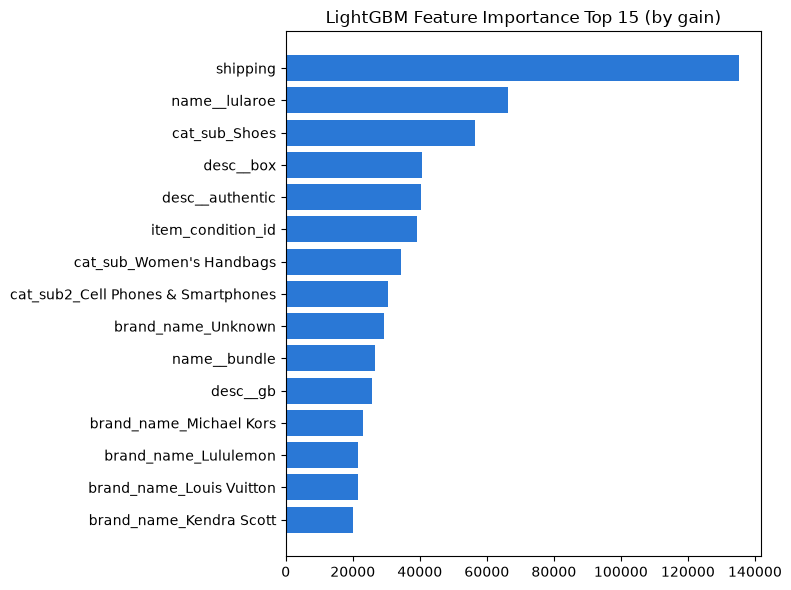
LightGBM gain 기준 피처 중요도 상위 15개(용우).
Ridge 그룹별 가중치(용우). 용우는 Ridge
계수(coef_)를 hstack에 결합한 순서 그대로 6개 컬럼
그룹(brand_name/category/item_condition_id/shipping/name/description)으로
나눠, 그룹별 가중치 합(Σ|coef|)과 피처 1개당 평균 가중치(mean|coef|)를
함께 확인했다.
| 그룹 | 피처 수 | 가중치 합 Σ|coef| | 피처당 평균 |coef| |
|---|---|---|---|
| description | 50,000 | 8,617.9 | 0.172 |
| name | 30,000 | 5,964.2 | 0.199 |
| brand_name | 4,536 | 887.1 | 0.196 |
| category | 991 | 155.7 | 0.157 |
| shipping | 1 | 0.185 | 0.185 |
| item_condition_id | 1 | 0.087 | 0.087 |
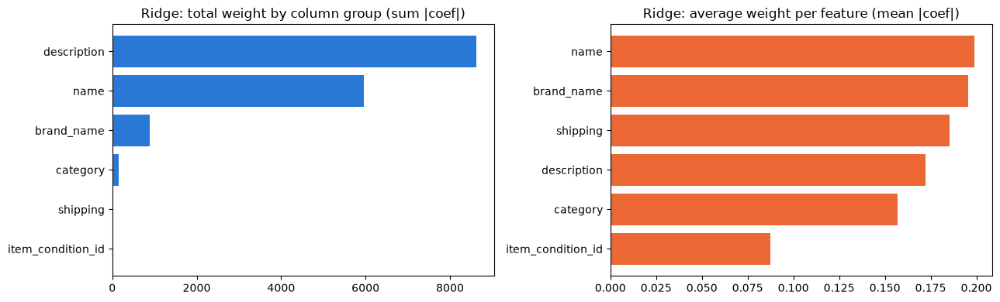
6개 컬럼 그룹의 가중치 합(Σ|coef|)과 피처당 평균 가중치(mean|coef|)를 나란히 비교한 막대그래프(용우). 왼쪽 축(합계)에서는 description/name이 압도하지만, 오른쪽 축(평균)으로 정규화하면 그룹 간 격차가 크게 줄어드는 것이 한눈에 드러난다.
가중치 합만 보면 피처 수가 압도적으로 많은
description·name이 크게 앞서지만, 피처 1개당
평균 가중치로 다시 보면
description(0.172)·name(0.199)·brand_name(0.196)이
비슷한 수준이고, 단일 피처인 shipping(0.185)도 이들과
맞먹는 평균 가중치를 갖는다. 반면
item_condition_id(0.087)만 뚜렷하게 낮은데, 이는 3.4절
상관계수 분석에서 item_condition_id와
log1p(price)의 상관계수가 -0.00으로 6개 수치형 피처 중 가장
낮았던 것과 정확히 일치하는 결과다 — 서로 다른 두 분석(상관계수, Ridge
가중치)이 같은 결론(상품 상태 등급 하나만으로는 가격을 거의 설명하지
못한다)에 독립적으로 도달한 셈이다.
Ridge 회귀계수(유경). alpha=5.0 기준으로 가격을 가장
크게 올리는 피처는 limbs, David Yurman,
carat, tyme, 14k처럼 고가
주얼리·브랜드·저장용량 관련 토큰이며, 가격을 가장 크게 낮추는 피처는
envelope, controller skin,
brass metal, dust bag처럼 저가 액세서리·소모품
관련 토큰이다. 이는 Ridge가 학습한 가중치가 실제 상품 카테고리의 가격
통념과 부합함을 보여준다. 14k(순금 함량 표기)처럼
숫자+단위가 결합된 토큰이 상위권에 오른 것은, 4.2절에서 확인한 “숫자
보존이 근소하게 유리했다”는 A/B 비교 결과의 구체적인 근거이기도
하다.
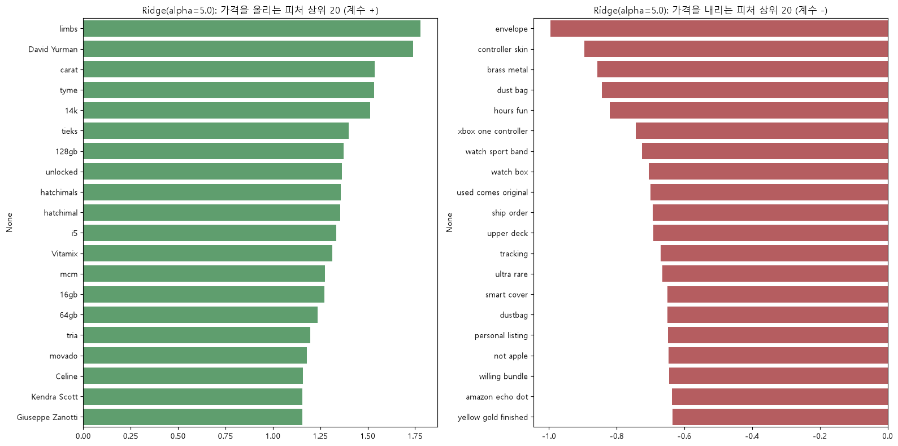
alpha=5.0 Ridge 모델의 상위/하위 회귀계수(유경).
LightGBM 피처 중요도(유경).
item_condition_id, bundle(묶음판매 토큰),
Cell Phones & Smartphones,
Other_Null(브랜드 결측), lularoe 순으로
중요도가 높게 나타나 용우의 결과와 상당 부분 겹친다 — 서로 다른
벡터화·인코딩을 썼음에도
shipping/item_condition_id 같은 정형 변수와
특정 고빈도 브랜드·카테고리가 공통적으로 중요 피처로 확인된다는 점은 두
팀원의 결과가 교차 검증된 것으로 볼 수 있다.
Other_Null(브랜드 결측을 나타내는 토큰)이 상위권에 오른
것도 주목할 만한데, 이는 3.2절에서 확인한 “결측 개수가 많을수록 평균
가격이 낮다”는 관찰(소현의 null_penalty 분석)이 유경의
LightGBM에서도 독립적으로 재확인된 것이다.
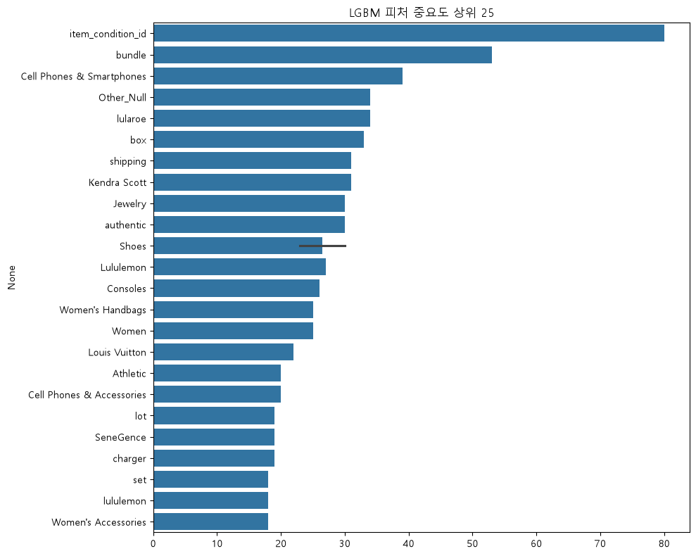
LightGBM 피처 중요도 상위 25개(유경).
Ridge 회귀계수(진희) — 유경과의 교차검증. 진희는
product_text(name+brand_name+category_name
통합)·item_description을 TF-IDF로 벡터화한 뒤, Ridge 학습이
끝난 계수를 컬럼명과 함께 데이터프레임으로 만들어 직접 정렬해봤다.
코드와 실제 상위 결과는 다음과 같다.
coef_df = pd.DataFrame({
'feature': feature_names,
'coef': ridge.coef_
})
# 가격을 가장 크게 낮추는 피처 20개
negative_features = coef_df.sort_values('coef', ascending=True).head(20)
# 가격을 가장 크게 올리는 피처 20개
positive_features = coef_df.sort_values('coef', ascending=False).head(20)가격을 가장 크게 올리는 상위 피처는 desc_14k(2.45),
desc_10k(1.91), desc_128gb(1.85),
desc_unlocked(1.80), desc_limbs(1.80),
desc_64gb(1.63), desc_16gb(1.61),
desc_32gb(1.56)처럼 금 순도(14k/10k)나 저장
용량(128gb/64gb/32gb/16gb) 같은 숫자+단위 조합 토큰이 대부분을
차지했다. 가격을 가장 크게 낮추는 피처는
product_dust bag(-2.07),
product_charger(-1.44),
product_sticker(-1.44), desc_envelope(-1.20),
desc_controller skin(-0.94)처럼 저가 액세서리·포장재 관련
토큰이었다.
이 결과를 6.2절 앞부분의 유경 결과와 나란히 놓으면 두 가지가 겹친다.
첫째, limbs가 진희·유경 두 사람 모두의 Ridge 상위 양(+)
계수에 독립적으로 등장했다 — 서로 다른 노트북, 다른 피처 구성(진희는
product_text 통합, 유경은 원본 컬럼 분리)에서도 같은 토큰이
최상위로 뽑힌 것이다. 둘째,
envelope/controller skin 계열의 저가 소모품
토큰도 두 사람의 하위(-) 계수 목록에 함께 등장했다. 셋째, 진희의
결과에서 14k/10k/128gb 같은
숫자+단위 토큰이 대거 상위권을 차지한 것은, 4.2절(3)에서 유경·용우가 A/B
테스트로 확인한 “숫자 보존이 근소하게 유리하다”는 결론에
구체적으로 어떤 숫자가 가격 신호로 작동하는지를
보여주는 직접적인 사례다.
용우·유경·진희 세 사람의 해석을 종합하면,
shipping/item_condition_id 같은 소수의 정형
변수, lularoe/limbs 같은 특정 고빈도
브랜드·카테고리 토큰, 그리고 14k/128gb 같은
숫자+단위 조합 토큰이 서로 다른 벡터화·인코딩 방식(용우: TF-IDF+원-핫,
유경: CountVec/TfidfVec+LabelBinarizer, 진희: product_text 통합
TF-IDF)에서도 공통으로 상위권에 등장한다. 이는 세 사람이 독립적으로
구성한 피처셋임에도 모델이 실제로 의존하는 신호의 종류는 비슷하다는 것을
보여주며, 5장(Feature Engineering)에서 확인한 “텍스트 피처가 전체 차원의
90% 이상”이라는 구조적 특징과도 일관된다. 또한 용우의 Ridge 그룹별
가중치 분석과 3.4절의 상관계수 분석이 item_condition_id에
대해 같은 결론(설명력이 거의 없음)에 독립적으로 도달했다는 점은, 서로
다른 팀원이 서로 다른 방법으로 검증했음에도 일관된 결과가 나왔다는
점에서 이 관찰의 신뢰도를 높여준다.
모든 팀원이 alpha를 바꿔가며 최적값을 탐색했다. 최적 alpha는 팀마다
1~5 범위에서 갈렸는데(소현 3, 용우 3, 유경 5, 진희 1, 혜현 3~4), 이는
사용한 피처 개수·벡터화 방식(특히 max_features, ngram
범위)이 서로 달라 정규화에 필요한 강도도 함께 달라졌기 때문으로
해석된다.
소현은 다른 팀원들이 쓴 1~5 범위의 촘촘한 그리드 대신,
[0.01, 1000]을 아우르는 훨씬 넓은 로그 스케일 그리드를
탐색했다. 의도는 “혹시 1~5보다 훨씬 작거나 훨씬 큰 alpha에서 더 나은
지점이 있는 건 아닌지”를 먼저 넓게 확인한 뒤 필요하면 좁혀가는
것이었다.
그리드를 선형이 아니라 로그
스케일(0.01, 0.03, 0.1, 0.3, 1, 3, 10, 30, 100, 300, 1000)로
구성한 이유도 명확하다 — Ridge의 정규화 항은 alpha가 커질수록 계수를
억제하는 효과가 곱셈적으로 커지므로, 1, 2, 3, 4, 5처럼 선형
간격으로는 자릿수가 다른 구간(예: 10 미만 vs 100 이상)의 효과 차이를
촘촘하게 비교할 수 없다. 자릿수마다 3개 지점(×1, ×3, ×10)을
고르게 배치하는 로그 그리드를 쓰면, 적은 개수(11개)의 실험만으로도
0.01부터 1000까지 5자릿수 전체 구간을 빠짐없이
훑을 수 있다는 것이 이 설계의 핵심이다.
# alpha 그리드 탐색 (로그 스케일로 넓게: 과소규제~과대규제 양쪽 극단을 모두 포함)
alphas = [0.01, 0.03, 0.1, 0.3, 1, 3, 10, 30, 100, 300, 1000]
alpha_results = []
for a in alphas:
ridge_a = Ridge(solver='lsqr', fit_intercept=False, alpha=a)
ridge_a.fit(X_train_a, y_train_a)
preds_a = ridge_a.predict(X_test_a)
score = rmsle(y_test_a, preds_a)
alpha_results.append((a, score))
print(f'alpha={a:>7}: RMSLE={score:.5f}')
# 최적 alpha 확인 + 시각화
best_alpha, best_rmsle = min(alpha_results, key=lambda x: x[1])11개 값을 전부 실측한 결과, 극단값(0.01·1000) 모두 alpha=3보다 뚜렷이 나빴다 — 특히 alpha=1000에서는 RMSLE가 0.52934까지 치솟아, 1~5 범위 밖을 볼 필요가 없다는 것을 직접 확인했다(아래 그림의 U자형 곡선 참고). 이는 “다른 팀원들이 1~5 범위만 봐도 충분했다”는 것을 별도로 검증해준 셈이기도 하다 — 좁은 범위만 탐색했다는 것이 탐색 부족이 아니라, 실제로 그 범위 밖에 더 나은 지점이 없었다는 것을 소현의 결과가 사후적으로 뒷받침한다.
| 팀원 | 최적 alpha | 해당 alpha의 RMSLE | 비교 alpha 구간에서의 RMSLE 변화 |
|---|---|---|---|
| 혜현 | 3~4 | 0.4593(설명 포함) | 0.1(0.4685) → 3(0.4593) → 4(0.4591, 근소 최저) → 5(0.4591) |
| 진희 | 2(스윕 기준)/1(최종 채택) | 0.4343(스윕 시점 validation) | 0.1(0.4558) → 0.5(0.4402) → 1(0.4358) → 2(0.4343, 스윕 최저) → 3(0.4351) → 5(0.4377) |
| 유경 | 5 | 0.4560 | 1(0.4576) → 5(0.4560, 5개 중 최저, 완만한 개선) |
| 소현 | 3 | 0.47067 | alpha 0.01→1000 구간에서 0.47256(0.01) → 0.47067(3, 최저) → 0.52934(1000)로 U자형 |
| 용우 | 3 | 0.45447 | 1(0.45597) → 3(0.45447, 최저) → 5(0.45468) |
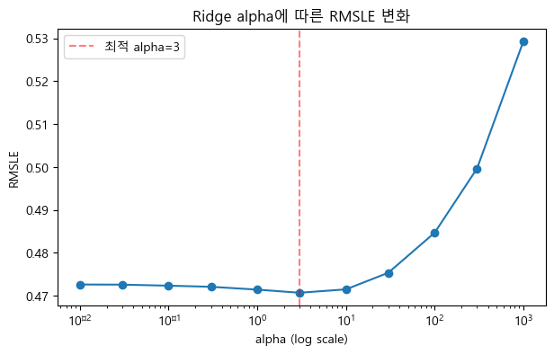
소현: Ridge alpha에 따른 RMSLE. alpha가 너무 작으면 과소 규제로, 너무 크면(alpha=1000일 때 0.52934) 과도 규제로 텍스트 피처 계수가 눌려 성능이 나빠지는 U자형 곡선.
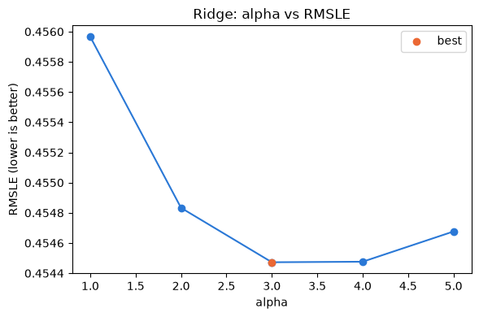
용우: Ridge alpha 스윕 결과, alpha=3에서 최적점(RMSLE 0.45447).
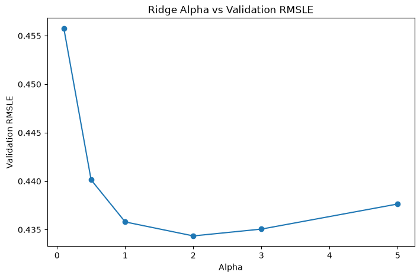
진희: alpha 0.1~5 구간의 validation RMSLE 곡선. alpha=2 부근에서
최저점(0.4343)을 찍고 이후 다시 완만히 상승하는 얕은 U자형으로,
소현·용우의 곡선보다 계곡이 훨씬 완만하다 — TF-IDF
max_features를 20만까지 넓게 잡은 만큼 alpha 변화에 대한
민감도 자체가 낮아진 것으로 해석된다. 이 스윕 이후 길이·단어수 파생
피처를 추가하고 StandardScaler로 스케일을 맞춘 최종 파이프라인에서는
alpha=1이 근소하게 더 낫게 나와(노트북 파일명
ridgefixfeature(0.4331)), 파생 피처 추가가 최적 alpha를
미세하게 이동시켰음을 보여준다.
유경의 alpha별 성능 곡선(모델 간 비교 포함)은 9.2절 그림을 함께 참고.
라운드 수·정규화 강도에 따라 팀 간 편차가 크게 나타났다. 소현·혜현처럼 early stopping과 라운드 수를 여러 단계로 늘려간 경우 RMSLE가 뚜렷하게 개선된 반면, 용우처럼 빠른 검증 모드(150라운드)로 실행한 경우 오히려 Ridge보다 낮은 성능을 보였다.
| 팀원 | 설정 | RMSLE | 비고 |
|---|---|---|---|
| 혜현 | 200라운드 기본값 | 0.4507 | |
| 용우 | 150라운드(FAST_LGBM_CHECK=True, early stop 미도달) | 0.52045 | Ridge(0.45597)보다 14.1% 낮은 성능 — 라운드 부족이 원인으로 추정 |
| 소현 | OneHot+유니그램(v1), 200라운드 | 0.49220 | Ridge(0.47067)보다 낮은 성능 |
| 유경 | 200라운드 기본값 | 0.5104 | Ridge(0.4560)·LGBM 모두 대비 성능 낮음(튜닝 미실시) |
| 혜현 | 1차 튜닝, 1000라운드, early stop 30 | 0.4422 | |
| 소현 | LabelEncoder native categorical + n-gram(v2), 200라운드 | 0.47363 | 피처 표현 방식만 바꿔 Ridge 근접 |
| 용우 | (참고) 과거 2000라운드 전체 실행 기록 | valid RMSE 0.45122까지 하락 | Ridge baseline(0.45892)보다 근소 우위, 학습곡선 이미지로 별도 보존 |
| 혜현 | 2차 튜닝, 최대 3000라운드, lr 0.05, leaves 127 | 진행 로그상 2300라운드 시점 valid RMSE 0.4381 | 로그 마지막 구간까지 개선 지속 중 |
| 소현 | 신규 피처 추가 + 튜닝, 1200라운드(early stop) | 0.42881 | |
| 혜현 | 3차 튜닝, 최대 4000라운드, lr 0.03, leaves 255 + 정규화(reg_alpha/lambda) | 최종 0.42909 | 4명의 LGBM 단일 모델 중 최저 RMSLE 기록 |
| 소현 | 동일 설정, 2000라운드(체크포인트 이어학습) | 0.42388 | 1200라운드 대비 추가 개선 |
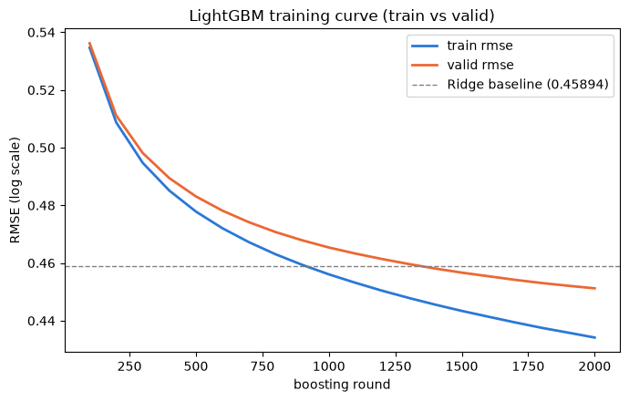
과거 2000라운드 전체 실행 기록. train/valid RMSE가 완만하게 계속 하락하며 약 1300라운드 부근에서 Ridge baseline(0.45892)과 교차한다 — LightGBM이 라운드 수가 충분히 확보돼야 선형 모델을 능가할 수 있음을 보여준다.
7.1(Ridge alpha)과 7.2(LightGBM)를 함께 보면, alpha 튜닝의 개선폭은 대체로 0.2~2.0%(혜현 예외적으로 -2.0%)에 그친 반면 LightGBM 라운드·정규화 튜닝은 -1.2%(소현)~-4.8%(혜현)로 더 큰 폭의 개선을 보였다 — 정규화 강도 하나를 조정하는 것보다 학습 예산(라운드 수) 자체를 늘리는 쪽이 이 데이터에서는 더 유효했다는 뜻이다(8.4절 표에서 전체 개선폭을 다시 비교한다). 소현·혜현의 단계별 튜닝 서사와 FM_FTRL 학습 곡선은 9장(팀원별 실험 상세)에서 상세히 다룬다.
이 장은 팀원 개인의 실험 서사가 아니라 팀 전체를 가로지르는 비교와 분석을 다룬다. 팀원별 세부 구현 과정은 9장(팀원별 실험 상세)에서 별도로 다룬다.
다섯 명 모두 동일한 문제(로그 변환된 price를 RMSLE로
평가, 낮을수록 우수)를 풀었지만, 전처리·피처 구성·모델
선택 조합을 각자 다르게 가져갔고 그 결과 최종 RMSLE에도 뚜렷한 차이가
났다. 아래 표는 각자가 도달한 최종(채택) 모델과, 각자의 파이프라인
내부에서 측정한 베이스라인 대비 개선율을 정리한 것이다.
| 순위 | 담당자 | 최종 모델/앙상블 | 최종 RMSLE | 주요 피처 표현 | 핵심 튜닝/개선 | 자체 baseline 대비 개선율 | 비교 시 주의사항 |
|---|---|---|---|---|---|---|---|
| 1 | 소현 | Ridge+LightGBM(2000라운드)+FM_FTRL(60epoch) 가중 블렌드, leakage-free 2-stage 검증 | 0.41778 | LGBM: 라벨인코딩+n-gram(v2) / Ridge·FM_FTRL: 원-핫+유니그램 | 신규 피처(target encoding 등)+FM_FTRL 직접구현+2단계 블렌딩 | LGBM v1(0.49220) 대비 15.1% | 5단계 순차 개선의 누적치(8.4절 참고) |
| 2 | 혜현 | LightGBM 단일(3차 정밀 튜닝) | 0.4291 | CountVec(name, 무제한)+TfidfVec(desc, ngram1-2)+LabelBinarizer | lr 0.03, num_leaves 255, L1/L2 정규화, 3단계 재튜닝 | 초기 Ridge baseline(0.4932) 대비 13.0% | Ridge+LGBM 앙상블(0.4401)보다도 단일모델이 우수 |
| 3 | 진희 | Ridge(alpha=1.0)+통합 product_text | 0.43313 | product_text/item_description 통합 TF-IDF(ngram1-2, 200k) | max_features 100k→200k, 길이·단어수 피처 | TF-IDF 100k(0.438358) 대비 1.2% | 카테고리 별도 인코딩 없이 텍스트 통합만으로 도달 |
| 4 | 유경 | Ridge(alpha=5) | 0.4560 | LabelBinarizer(카테고리)+CountVec/TfidfVec(ngram1-3) | alpha 1→5 그리드 | alpha=1(0.4576) 대비 0.35% | Lasso(0.6082)·LGBM 튜닝전(0.5104) 대비는 확실히 우수 |
| 5 | 용우 | Ridge(alpha=3, 숫자보존) | 0.45447 | TfidfVec(ngram1-2)+OneHotEncoder | 숫자 보존 정제+alpha 1→3 | 숫자제거+alpha1(0.45892) 대비 0.97% | LightGBM은 150라운드만 실행, 미완성 비교 |
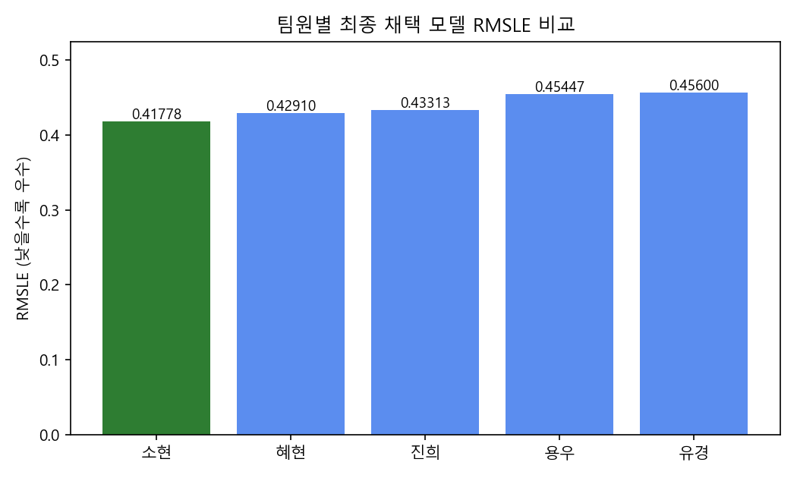
팀원별 최종 채택 모델의 RMSLE 비교(오름차순 = 성능 좋은 순, 낮을수록 우수). 소현이 5명 중 최저(최고 성능) RMSLE를 기록했다.
다섯 모델 모두 동일한 Mercari 데이터셋·동일한 RMSLE 지표를 사용했지만 정확한 train/test 분할 방식, 피처 캡(vocab 크기), 텍스트 정제 규칙이 서로 달라 절대 수치를 팀원 간 1:1로 비교하는 것은 완전히 공정한 비교가 아니다. “개선율” 열은 각 팀원 자신의 파이프라인 내부에서 측정한 전/후 비교이며, 팀원 간 개선율끼리도 서로 다른 출발점·조건에서 계산된 것이라 직접 비교 대상이 아니다.
소현의 조합(LightGBM 2000라운드 + FM_FTRL 60epoch 블렌드)이 팀 내 최고 성능(0.41778)에 도달한 원인은 단일 요인이 아니라 다음 네 가지가 누적된 결과로 볼 수 있다.
① 모델별로 분리된 피처 표현. 하나의 공통 피처셋에 모든 모델을 억지로 맞추지 않고, LGBM은 라벨인코딩+n-gram, Ridge/FM_FTRL은 원-핫+유니그램을 각자에게 유리한 형태 그대로 사용했다(9.5절).
② 단일 모델 대비 블렌딩의 실제 개선폭. 튜닝된 LGBM 단독(0.42388) → 블렌드(0.41778)로 약 1.4%(절대 0.0061) 추가 개선됐다. 이는 혜현의 사례(이미 잘 튜닝된 LGBM 단일모델 0.4291이 그보다 앞서 만든 Ridge+LGBM 앙상블 0.4401보다 우수)와 대조적이다 — 혜현의 경우는 “튜닝이 덜 된 상태의 앙상블은 역효과”를, 소현의 경우는 “개별 모델을 최대로 끌어올린 뒤의 이종 모델 블렌딩은 추가 효과”를 보여줘, 두 사례가 상호 보완적인 시사점을 제공한다(8.3절에서 더 다룬다).
③ Ridge 가중치가 0으로 수렴한 의미. valid에서 찾은 최적 블렌드 가중치(ridge=0, lgbm=0.65, fm=0.35)에서 Ridge의 가중치가 0이 됐다는 것은, 초기 시점(alpha 튜닝 단계, 7.1절)에는 Ridge가 LGBM보다 우수했지만 LGBM을 제대로 튜닝한 뒤로는 Ridge가 더 이상 새로운 정보를 보태지 못했다는 뜻이다 — Ridge와 (튜닝된) LGBM+FM_FTRL이 학습하는 신호가 상당 부분 겹친다는 의미로 해석할 수 있다. 반대로 LGBM(트리 기반 비선형 상호작용)과 FM_FTRL(선형+2차 상호작용을 명시적으로 모델링)은 65:35로 둘 다 유의미한 가중치를 유지했다. 다만 두 모델의 오차 상관관계를 직접 측정한 기록은 없어, “서로 다른 오차를 보완했다”는 것은 가중치 배분에서 유추한 해석이지 직접 검증된 사실은 아니라는 점을 밝혀둔다.
④ leakage-free 2-stage 검증의 의미. Stage 1(train→valid로 튜닝) → Stage 2(train+valid→test 단 한 번 평가) 구조는, RMSLE 0.41778이 하이퍼파라미터·블렌드 가중치를 test에 맞춰 고른 결과가 아니라는 신뢰성을 보장한다. 이는 나머지 4명이 공통으로 지킨 “train에만 fit” 원칙(4.1절)보다 한 단계 더 엄격한 절차다.
다른 팀원 최종 결과와의 실제 격차는, 2위 혜현(0.4291) 대비 약 2.6%(절대 0.0113), 5위 용우(0.45447) 대비 약 8.1% 낮다(8.1절 표 참고).
팀원 순서가 아니라 모델 계열을 가로질러 정리하면 다음과 같다.
Ridge — 왜 여러 팀원에게 안정적인 베이스라인이었는가. 5명 모두 Ridge를 최초 베이스라인으로 채택했고 RMSLE는 0.43~0.47 구간에 몰려 있었다(8.1절 표). 6.1·7.1절에서 확인했듯 8만~15만 차원의 고차원 희소 텍스트·원-핫 피처 위에서, L2 정규화가 다수의 약한 신호(단어·브랜드·카테고리 더미)에 계수를 분산시켜 과적합 없이 안정적으로 수렴하기 때문으로 해석된다.
Lasso — 왜 유경의 실험에서 크게 과소적합했는가. 유경의 Lasso(alpha=0.001)는 RMSLE 0.6082로 Ridge(0.4560)·LGBM(0.5104) 모두보다 낮은 성능을 보였다. 유경은 이 결과를 그냥 넘기지 않고, 표본 25만 행(train 20만/test 5만)으로 재현한 축소 실험을 통해 원인을 다섯 갈래로 나눠 직접 진단했다.
| 원인 | 진단 내용 |
|---|---|
| ① L1의 구조적 특성 | 가격 신호가 new/nwt/브랜드명/n-gram처럼
수만 개의 “약한 신호”에 분산되어 있는데, Lasso(L1)는 83,486개 피처 중
152개(0.2%)만 남기고 나머지를 정확히 0으로 만들어 유효 신호 대부분을
함께 버렸다. Ridge(L2)는 계수를 0으로 만들지 않고 축소만 하므로 이
구조와 더 잘 맞는다. |
| ② alpha 스케일 불일치 | Ridge 목적함수는 Σw², Lasso 목적함수는
Σ\|w\|를 정규화항으로 쓰므로 같은 alpha 값이라도 규제
강도가 전혀 다르다. alpha=0.001이 L1 기준으로는 8만여 개의
약한 상관 피처 대부분을 0으로 밀어버릴 만큼 강했다. |
| ③ 수렴 실패 여부(직접 확인) | n_iter=788 < max_iter=2000이고
ConvergenceWarning도 없었으며,
max_iter=10000으로 올려도 RMSLE 0.6131·계수 152개로 결과가
완전히 동일했다 — 즉 “덜 학습돼서”가 아니라 L1 해 자체가 그렇게 수렴한
것이다. |
| ④ n-gram 다중공선성 | "new"/"brand new"/"new with tags"/"nwt"처럼
서로 강하게 상관된 n-gram 피처가 많은데, L1은 상관된 무리에서 하나만
남기고 나머지를 0으로 만들며 그 선택도 표본에 따라 흔들린다. L2는 무리
전체에 가중치를 나눠 분산이 작고 일반화가 낫다. |
| ⑤ LGBM(0.5104)과의 비교 | LGBM은 alpha=0.001 Lasso처럼 어휘를 통째로 버리지 않고(로그상 81,202개 피처 사용) 필요한 만큼만 분기에 사용하므로 Lasso보다는 낫지만, 튜닝 없는 기본 파라미터로는 Ridge를 넘지 못해 Ridge와 Lasso 사이에 위치했다. |
축소 표본에서 Lasso(alpha=0.001)의 RMSLE(0.6131)는 Ridge(0.4950)보다 “train 평균만 예측하는 기준선”(0.7514)에 더 가까웠다 — 유경은 이를 과대적합이 아니라 심한 과소적합의 증거로 해석했고, “Lasso를 쓰려면 alpha를 훨씬 낮추거나 ElasticNet을 쓰는 편이 낫지만, 이 데이터에서는 Ridge가 가장 자연스럽고 단순한 좋은 기준선”이라는 결론을 내렸다.
학습 시간 측면에서도 세 모델의 격차는 뚜렷했다. 같은 조건(148만 행 전체, 85,521차원)에서 실측한 학습+예측 소요 시간은 다음과 같다.
| 모델 | RMSLE | 학습+예측 소요시간 |
|---|---|---|
| Ridge(alpha=1.0) | 0.4576 | 94.7초 |
| Ridge(alpha=2.0) | 0.4567 | 74.6초 |
| Ridge(alpha=3.0) | 0.4563 | 64.0초 |
| Ridge(alpha=4.0) | 0.4561 | 57.6초 |
| Ridge(alpha=5.0, 최적) | 0.4560 | 54.1초 |
| Lasso(alpha=0.001) | 0.6082 | 528.6초 |
alpha가 커질수록 Ridge의 계산 비용이 오히려 줄어드는
경향(94.7초→54.1초)이 관찰되는데, 이는 규제가 강해질수록
lsqr 솔버의 반복 수렴이 더 빨리 끝나기 때문으로 보인다.
Lasso는 좌표하강(coordinate descent) 방식이 8만여 개 피처를 훑는 비용
자체가 커 Ridge 대비 5~10배의 시간이 들었는데도 성능은 오히려 가장
나빴다는 점에서, 이 데이터셋에서는 Lasso가 “시간 대비 성능” 양쪽
모두에서 불리한 선택이었다.
LightGBM — 언제 Ridge를 앞질렀고 언제 뒤처졌는가. 7.2절 표를 계열 기준으로 다시 보면, 라운드 수와 정규화를 충분히 준 경우(소현 1200~2000라운드, 혜현 3단계 4000라운드)에는 각각 0.42388, 0.4291까지 내려가 Ridge를 앞질렀다. 반면 라운드가 부족하거나(용우 150라운드, 0.52045) 튜닝을 하지 않은 경우(유경 200라운드 기본값, 0.5104) 모두 Ridge보다 낮은 성능에 그쳤다. 즉 LightGBM 자체의 우열이 아니라 학습 예산과 정규화를 얼마나 투입했는가가 Ridge 대비 승패를 갈랐다.
앙상블이 항상 단일 모델보다 좋지는 않았던 이유. 혜현의 Ridge+LightGBM 가중 앙상블(0.4401)은 이후 LightGBM을 3차까지 정밀 튜닝한 단일 모델(0.4291)보다 오히려 못했다(9.4절). 앙상블 시점에 결합된 두 모델(Ridge 0.4593, LGBM 튜닝 전 0.4507) 자체가 아직 최선이 아니었기 때문으로, “덜 튜닝된 두 모델을 섞는 것”이 “하나를 끝까지 튜닝하는 것”보다 못할 수 있음을 보여준다.
최종 블렌드가 추가로 개선한 근거. 소현의 경우는 다르다 — LightGBM을 이미 충분히 튜닝(0.42388)한 뒤에, 서로 다른 알고리즘 계열(FM_FTRL)을 추가로 블렌딩해 0.41778까지 개선했다(8.2절). 혜현의 사례와 함께 보면, “튜닝이 덜 된 상태의 앙상블은 역효과를 낼 수 있지만, 개별 모델을 최대한 튜닝한 뒤의 이종 모델 블렌딩은 추가 개선 여지가 있다”는 것이 두 사례에서 공통으로 확인된다.
각 팀원 파이프라인 내부에서 측정된 주요 개선 단계를 “변경 전 → 후 → 절대 개선폭 → 상대 개선율” 형태로 정리했다. 모든 수치는 각 팀원의 동일 조건 내부 전/후 비교이며, 팀원 간 절대 수치를 직접 비교하는 것이 아니다. 개선폭의 크기만 놓고 보면 피처 표현 자체를 바꾼 단계(hstack 구성 교체, LightGBM 라운드+정규화 동시 확장)가 -3.8%~-4.8%로 가장 크고, 이미 어느 정도 튜닝된 상태에서 파라미터 하나만 미세 조정한 단계(alpha 튜닝, vocab 캡 제거)는 -0.06%~-2.0%로 상대적으로 작다. 이는 “무엇을 바꾸느냐”가 “얼마나 정교하게 튜닝하느냐”보다 개선폭에 더 크게 기여했다는 것을 시사한다.
개선 후(변경 후) RMSLE가 큰 값부터 작은 값 순으로 정렬했다.
| 항목 | 담당자 | 변경 전 → 후 (RMSLE) | 절대 개선폭 | 상대 개선율 |
|---|---|---|---|---|
| 숫자 토큰 보존 | 유경 | 0.48787 → 0.48463 | -0.00324 | -0.7% |
| hstack 구성 교체 | 소현 | 0.49220 → 0.47363 | -0.01857 | -3.8% |
| vocab 캡 제거(참고) | 소현 | 0.47320 → 0.47293 | -0.00027 | -0.06%(노이즈) |
| Ridge alpha 튜닝 | 소현 | 0.47140 → 0.47067 | -0.00073 | -0.2% |
| 신규 피처(길이·TE) | 소현 | 0.47320 → 0.47022 | -0.00298 | -0.6% |
| Ridge alpha 튜닝 | 혜현 | 0.4685 → 0.4593 | -0.0092 | -2.0% |
| Ridge alpha 튜닝 | 유경 | 0.4576 → 0.4560 | -0.0016 | -0.3% |
| 숫자 토큰 보존 | 용우 | 0.45892 → 0.45597 | -0.00295 | -0.6% |
| Ridge alpha 튜닝 | 용우 | 0.45597 → 0.45447 | -0.00150 | -0.3% |
| TF-IDF vocab 확대 | 진희 | 0.438358 → 0.434032 | -0.004326 | -1.0% |
| 길이·단어수 파생 피처 | 진희 | 0.434032 → 0.433132 | -0.0009 | -0.2% |
| LightGBM 라운드+정규화 | 혜현 | 0.4507 → 0.42909 | -0.02161 | -4.8% |
| LightGBM 라운드 확장 | 소현 | 0.42881 → 0.42388 | -0.00493 | -1.2% |
| FM_FTRL 블렌딩 추가 | 소현 | 0.42881 → 0.42114 | -0.00767 | -1.8% |
| 블렌드+LGBM 재적용 | 소현 | 0.42114 → 0.41778 | -0.00336 | -0.8% |
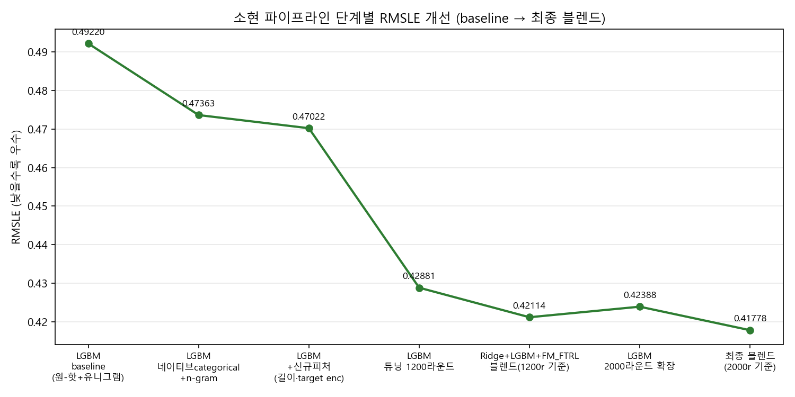
소현 파이프라인의 단계별 RMSLE 변화(baseline → 최종 블렌드, 낮을수록 우수). 피처 표현 교체와 라운드 확장이 가장 큰 개선폭을 보였다.
이 표에서 확인되는 패턴은, 피처 표현 방식 자체를 바꾸는 개선(hstack 구성 교체 -3.8%, LightGBM 정규화 튜닝 -4.8%)이 하이퍼파라미터 미세조정(alpha 튜닝 대부분 -0.2~-2.0%, vocab 확대 -1.0% 내외)보다 개선폭이 크다는 것이다. 이는 8.5절 공통 인사이트로 다시 정리한다.
다섯 팀원의 실험을 종합해 Mercari 문제에서 반복적으로 확인된 공통 결론은 다음과 같다.
8장이 팀 전체를 가로지르는 비교와 분석이었다면, 이 장은 각 팀원의 노트북에서 8장에 다 담기지 않은 고유한 실험 서사와 세부 구현을 정리한 부속 자료다.
용우는 name/description을 TF-IDF(ngram 1~2), 브랜드·카테고리를 원-핫 인코딩으로 처리해 85,529차원 피처를 구성했다. 핵심 실험은 텍스트 정제 시 숫자 보존 여부의 A/B 테스트로, 숫자를 보존한 버전이 RMSLE를 0.45892→0.45597로 개선시켰다(4.2절 유경과 교차검증).
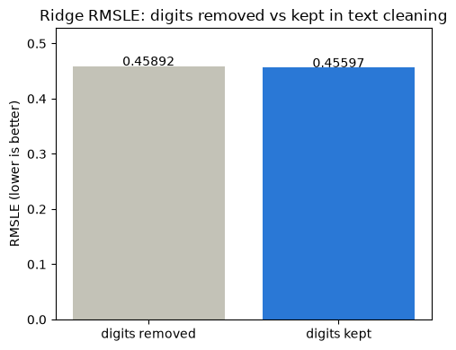
사이즈·용량 정보를 담은 숫자를 정규식에서 지우지 않고 보존한 버전이 RMSLE를 0.00295 개선했다.
alpha 1~5 스윕으로 alpha=3에서 최적점(RMSLE 0.45447)을 찾았다. LightGBM은 150라운드 제한으로 0.52045에 그쳐 Ridge를 넘지 못했지만, 노트북에 하드코딩된 2000라운드 풀 학습 로그를 보면 0.45122까지 접근 가능했을 것으로 추정된다. 최종적으로 전체 파이프라인을 재사용 가능한 아티팩트로 저장해 새 상품 데이터에도 바로 적용할 수 있도록 설계한 것이 팀 내 유일한 실전 배포 지향 기여였다.
유경은 브랜드·카테고리를 LabelBinarizer,
name/description을 CountVectorizer/TfidfVectorizer(ngram 1~3)로 처리해
85,521차원 피처를 구성한 뒤 Ridge·Lasso·LGBM을 동일 조건에서
비교했다.
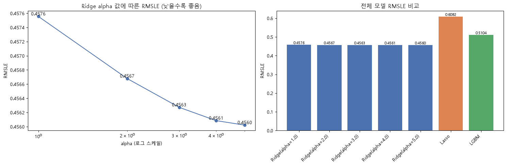
Ridge는 alpha=5.0에서 RMSLE 0.4560으로 최저, Lasso(0.6082)는 LGBM(0.5104)보다도 크게 뒤처졌다.
Ridge는 alpha=5에서 RMSLE 0.4560으로 최저를 기록한 반면, Lasso는 83,486개 피처 중 152개(0.2%)만 남기고 나머지를 0으로 만들어 과소적합에 빠졌다는 것을 직접 진단했다. 카테고리별 오차 분석에서는 표본이 적은 카테고리일수록 RMSLE가 높고 Women처럼 표본이 많은 카테고리는 가장 낮았다(0.4232) — 표본 크기가 예측 정확도에 미치는 영향을 팀에서 처음 정량화한 결과다.
진희(채택본 ridgefixfeature(0.4331))는
name·brand_name·category_name을 하나의 product_text로
통합해 TF-IDF(ngram 1~2)를 적용했다 — 브랜드·카테고리가 결측이어도
상품명에서 유사 정보를 학습할 수 있다.
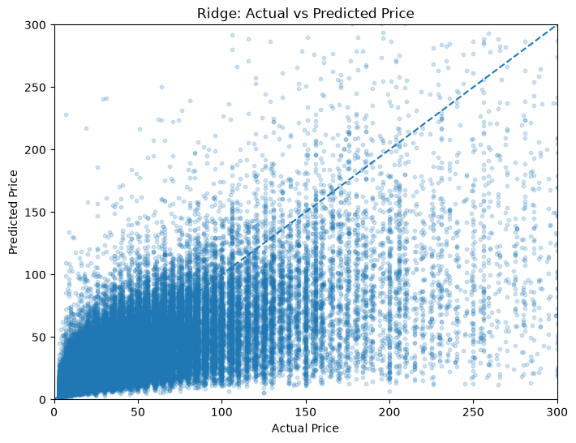
고가 구간으로 갈수록 예측이 실제보다 낮게 편향되는 경향이 관찰된다.
TF-IDF max_features를 100k→200k로 늘리며 RMSLE
0.438358→0.434032로 수확체감 개선을 확인했고, 길이·단어 수 파생 피처를
더해 최종 0.43313을 채택했다. 문자 단위 n-gram은 RMSLE
0.898로 크게 악화돼 채택하지 않았고, LGBM도 4000라운드까지 시도했으나
early stopping에 도달하지 못한 채 Ridge를 넘지 못했다 — 고차원 희소
피처에서는 정규화된 선형모델이 더 안정적이라는 결론이다.
혜현은 name에 CountVectorizer(무제한), item_description에
TfidfVectorizer(max 50,000, ngram 1~2)를 차등 적용하고 브랜드·카테고리는
LabelBinarizer로 인코딩했다. Ridge(0.4593)와 튜닝 전
LightGBM(0.4507)을 가중 평균 앙상블(0.45:0.55)해 RMSLE 0.4401을 달성한
뒤, LightGBM만 세 차례 정밀 튜닝했다.
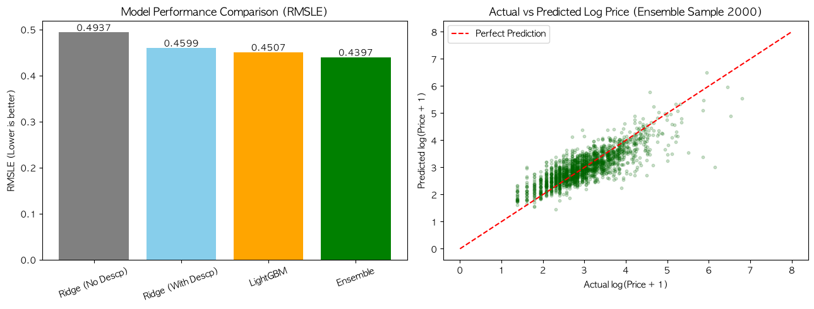
3차 튜닝을 거친 LightGBM 단일 모델(0.4291)이 앞선 앙상블(0.4401)을 앞질렀다.
learning rate를 0.15→0.05→0.03으로 낮추고 num_leaves와 L1/L2 정규화를 단계적으로 강화해 RMSLE 0.4422→0.4353→0.4291까지 개선했다. 3차 튜닝을 거친 단일 LightGBM이 앞선 앙상블(0.4401)보다도 우수해, “덜 튜닝된 모델을 섞는 것”보다 “하나를 끝까지 튜닝하는 것”이 나을 수 있음을 보여준 사례다.
소현은 hstack 구성을 LGBM 네이티브 categorical+n-gram으로 바꿔 RMSLE를 0.49220→0.47363으로 개선한 뒤, 새 피처(5.6절)를 더했다. 핵심은 두 가지다. 첫째, 설치 불가능했던 wordbatch(FM_FTRL) 대신 FTRL-proximal+FM 상호작용항을 직접 구현했다.
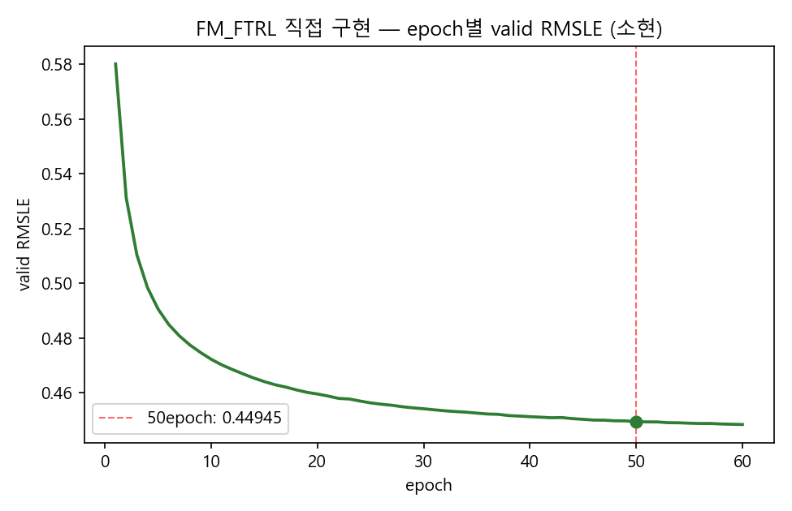
60epoch 동안 valid RMSLE가 0.58017→0.44840까지 꾸준히 감소했다.
둘째, test set을 마지막 한 번만 쓰는 2단계 leakage-free 구조로 각 모델이 유리한 피처 표현을 그대로 쓰게 하고(Ridge/FM_FTRL: 원-핫+유니그램, LGBM: 라벨인코딩+n-gram) LGBM(0.42881)과 블렌딩(ridge=0, lgbm=0.65, fm=0.35)해 RMSLE 0.42114를, LGBM 2000라운드 확장 후 최종 RMSLE 0.41778을 달성했다 — baseline 대비 15.1% 개선이자 팀 전체 최고 성능이다.
다섯 명이 각자 다른 전처리·피처·모델 조합으로 같은 문제를 풀었지만, 결과를 모아보면 공통된 결론에 자연스럽게 수렴했다 — 그 일곱 가지는 8.5절(팀 전체 공통 인사이트)에서 팀원·수치·절 번호 근거와 함께 이미 정리했다.
검증 구조 설계(data leakage 방지) 자체도 하나의 성능 요소였다는 점은 8장에서 다루지 않았으므로 여기서 덧붙인다. 모든 팀원이 train에만 벡터라이저/인코더를 fit하는 원칙은 공통으로 지켰지만, 소현은 여기서 더 나아가 test set을 정말 마지막에 딱 한 번만 사용하는 2단계(train→valid 튜닝, train+valid→test 최종평가) 구조를 만들었다(9.5절). 이는 “성능이 좋아 보이는 것”과 “실제로 새 데이터에 일반화되는 것”을 구분하기 위한 장치였고, 유경이 느낀점에서 언급했듯 “좋아 보이는 것과 실제로 효과가 있는 것은 다르다”는 팀 전체의 문제의식과 맞닿아 있다.
종합하면, 이번 프로젝트에서 팀이 얻은 가장 큰 배움은 특정 알고리즘의 우열이 아니라 “문제의 데이터 구조(고차원 희소 텍스트)를 이해하고 그에 맞는 피처 표현과 검증 절차를 설계하는 것이, 어떤 단일 모델을 쓰느냐보다 결과에 훨씬 크게 기여한다”는 것이었다.
앞선 절이 다섯 명의 노트북을 하나의 흐름으로 종합한 것이라면, 이 절은 각 팀원이 프로젝트를 마치며 개인적으로 남긴 소감을 그대로 옮긴 것이다.
진희. 이번에 텍스트 전처리를 다양하게 시도하며
점수를 어떻게 높일지 계속 체크해봤다. 릿지나 LGBM처럼 비교적 단순한
모델을 썼기 때문에 오히려 하이퍼파라미터와 피처 구성 하나하나에 더
집중할 수 있었다. 그 결과 아주 작은 차이로 그친 실험도 있었고, 큰 차이로
효율을 확인한 실험도 있었다 — 예를 들어 단어 단위 대신 글자
단위(character n-gram) TF-IDF를 시도해봤지만 오히려 더 안 좋은
결과(RMSLE 0.898)를 가져왔다. 가장 가치 있었다고 생각하는 작업은 데이터
전처리였다. 전처리가 곧 학습이 잘되고 안 되고를 결정짓는다고 느꼈고,
그래서 name·brand·category를 통합한 product_text와 상품명을
포함한 item_description을 만든 것을 가장 중요한 선택으로
꼽는다. 다만 그 성능을 실제로 최대한 끌어내는 데는 결국 max_features나
min_df 같은 모델 파라미터 조정이 함께 필요했고, 조금씩 조정할 때마다
미세하게 개선되는 과정을 반복하며 결국 이 두 축(피처 설계 + 파라미터
조정)에 집중할 수밖에 없었다. 팀원들과 서로의 노트북을 공유하고 설명하는
과정도 스스로를 되짚어보는 데 크게 도움이 됐다. 아쉬운 기억으로는, 글자
단위 TF-IDF를 체크하던 두 번째 파일이 저장되지 않아 유실된 일이 있었다 —
이후로는 중간 실험 결과를 더 자주 저장해두는 습관이 필요하다고
느꼈다.
용우. 데이터를 살펴보며 여러 가설을 세워 전처리하는 과정에서 생각할 거리가 많았다. 어떤 정답이 정해져 있는 문제가 아니었기에, 얻을 수 있는 정보를 최대한 끌어내며 진행했고, 그 과정에서 데이터의 형태에 따라 써야 하는 함수와 자료형이 달라진다는 것을 체감했다. 가장 크게 고민한 지점은 두 모델을 비교하며 마주한 선택이었다 — 빠르지만 점수가 낮은 모델을 쓸 것인가, 시간이 오래 걸리더라도 더 나아질 여지가 있는 모델에 시간을 투자할 것인가. 실무나 서비스 관점에서 생각해봤을 때 시간이 오래 걸리더라도 더 정확하게 예측해주는 모델을 선택하는 것이 낫겠다는 결론에 이르렀다. 이후에는 item_description 외에 상품명(name)에서도 브랜드 이름을 추출해 브랜드 사전에 추가로 매칭하는 방향을 시도해보고 있는데, 매칭되는 브랜드명이 늘어날수록 잘못된 브랜드를 잘못 가져와 오탐이 늘어날 위험도 함께 커진다는 점을 유의하며 진행 중이다.
혜현. 이번 메르카리 프로젝트를 통해 비정형 텍스트 피처 엔지니어링과 대용량 데이터 파이프라인 최적화의 중요성을 깊이 체감했다. 상품명에는 CountVectorizer를, 본문 설명글에는 TfidfVectorizer(ngram 1~2)를 데이터 성격에 맞게 차별 적용해 문맥과 핵심 키워드를 효과적으로 피처화하려 했다. 특히 140만 건에 달하는 대규모 희소 데이터를 다루면서, train/test 분할 전에 벡터화를 해버리면 생길 수 있는 데이터 누수를 막기 위해 엄격한 사전 분할과 fit/transform 분리를 지켰다. 또한 모델링 전에 희소 행렬을 한 번만 결합하고 메모리를 즉시 반환하도록 설계해 연산 효율과 안정성을 높였다. 모델링 단계에서는 희소 행렬 연산에 최적화된 Ridge(solver=‘lsqr’)로 먼저 기준 성능을 다진 뒤, LightGBM을 단계별로 정밀 튜닝해나갔다. 조기 종료와 피처·데이터 서브샘플링, L1/L2 복합 정규화를 순차적으로 적용하며 고차원 희소 피처의 과적합을 방지하고 비선형 패턴을 학습시켰고, 그 결과 3차 정밀 튜닝을 거친 LightGBM 단일 모델이 앞서 만든 Ridge+LightGBM 앙상블(0.4401)까지 넘어서는 최저 RMSLE(0.4291)를 달성했다. 이 과정에서 데이터 구조와 알고리즘 특성에 맞춘 하이퍼파라미터 최적화가 실제로 얼마나 큰 힘을 발휘하는지를 크게 실감할 수 있었다.
유경. 가장 크게 남은 배움은 “좋아 보이는 것”과 “실제로 효과가 있는 것”이 다르다는 점이었다. category_name을 몇 조각으로 나눌지, 정규식에서 숫자를 남길지 같은 사소해 보이는 선택도 직접 데이터로 비교해 보기 전에는 판단하기 어려웠다 — 실제로 카테고리 분리 방식은 결과에 거의 영향이 없었던 반면, 숫자 보존은 RMSLE를 꾸준히 약 0.7% 낮췄다. 모델 쪽에서는 화려한 모델보다 문제 구조에 맞는 모델이 중요하다는 것을 체감했다. 8만 개가 넘는 희소한 텍스트 피처에서는 계수를 조금씩 줄이는 Ridge가 가장 잘 맞았고, 반대로 Lasso는 규제가 세게 걸려 피처의 99% 이상을 0으로 만들어 버려 오히려 과소적합했다. LGBM도 튜닝 없이는 Ridge를 넘지 못했다. 지표를 다루면서 RMSLE가 “log를 씌운 상태에서의 RMSE”라는 것을 정확히 이해하는 것도 은근히 중요했다 — 타깃을 이미 log1p 했는데 여기에 또 log를 씌우면 이중 계산이 된다는 점을 정리하며, 지표 정의를 대충 넘기면 안 된다는 것을 배웠다. 아쉬운 점은 데이터가 커서 전체로 교차검증을 제대로 돌리지 못한 것, 그리고 텍스트 임베딩이나 모델 앙상블까지는 시도하지 못한 것이다. 다만 잔차 분포와 카테고리별 오차를 시각화해보니 어느 구간에서 모델이 약한지는 감을 잡을 수 있었다.
소현. 전처리를 마친 뒤 곧바로 하이퍼파라미터 튜닝에
매달리기보다, 좋은 feature vector를 만드는 데 집중하는 방향을 처음부터
의도적으로 택했다. “Garbage in, garbage out” — 아무리 튜닝을 정교하게
해도 feature 자체가 충분한 예측력을 갖지 못하면 한계가 뚜렷하다고 봤기
때문이다. 실제로 LGBM이 원본 sparse 표현(0.49220)에서 native categorical
+ n-gram(0.47363)으로 바꾼 것만으로 크게 개선된 것을 보고, 모델 하나를
정해 하이퍼파라미터를 극한까지 파는 대신 좋은 X_features를
만든 뒤 Ridge와 LGBM의 성능을 함께 확인하는 절차로 전략을 다시 짰다.
Ridge는 선형모델이라 apple·iphone·128gb 같은 조건들을 단순히 더하는
역할만 할 수 있지만, 실제 가격은 “Apple×iPhone”처럼 조합에 따라
달라지므로 이 조합 효과를 잡으려면 LightGBM(트리 분기) 쪽이 유리하다는
것도 실험으로 확인했다. FM_FTRL을 캐글 공개 커널(Wordbatch, Anttip)에서
아이디어를 얻어 직접 구현하고, validation set에서 최적 블렌드 비율을
탐색해 최종 LGBM RMSLE 0.41778을 달성한 과정 전체가, 데이터 구조를
파악하는 데서 시작해 그에 맞는 feature 설계를 고민하는 것이 모델
파라미터 하나하나를 조정하는 것보다 근본적으로 중요하다는 확신으로
이어졌다.